МИНИСТЕРСТВО
СТРОИТЕЛЬСТВА ПРЕДПРИЯТИЙ
НЕФТЯНОЙ И ГАЗОВОЙ ПРОМЫШЛЕННОСТИ
ВСЕСОЮЗНЫЙ
НАУЧНО-ИССЛЕДОВАТЕЛЬСКИЙ ИНСТИТУТ
ПО СТРОИТЕЛЬСТВУ МАГИСТРАЛЬНЫХ ТРУБОПРОВОДОВ
вниист
ГЛАВСИБТРУБОПРОВОДСТРОЙ
СОЮЗПРОВОДМЕХАНИЗАЦИЯ
ИНСТРУКЦИЯ
ПО
СТРОИТЕЛЬСТВУ ВРЕМЕННЫХ ДОРОГ
ДЛЯ ТРУБОПРОВОДНОГО СТРОИТЕЛЬСТВА
В
СЛОЖНЫХ УСЛОВИЯХ
(НА ОБВОДНЕННОЙ И ЗАБОЛОЧЕННОЙ МЕСТНОСТИ)
ВСН 2-105-78
Миннефтегазстрой
Москва 1978
СОДЕРЖАНИЕ
В настоящей Инструкции рассматриваются вопросы организации и технологии строительства временных дорог магистральных трубопроводов на обводненных и заболоченных участках трассы. Приведены основные конструкции временных дорог; изложена методика их подбора и расчета в зависимости от несущей способности подстилающих грунтов, типа болот, мощности торфяной залежи, величин удельных и осевых нагрузок транспортных средств и строительных механизмов. Кроме того, даны способы ускоренного определения и обеспечения проходимости машин и механизмов для временного проезда через заболоченную местность.
При разработке Инструкции учтены результаты исследований ВНИИСТа, Гипроспецгаза, Южниигипрогаза, Союздорнии, а также опыт строительства дорог организациями Миннефтегазстроя.
Инструкция разработана кандидатами техн. наук В.И. Прокофьевым, В.П. Ментюковым, Т.Х. Саттаровым, В.Д. Прохоренковым, инженерами Ю.Л. Балабаньяном, Л.В. Косаревой, В.И. Лугачевым (ВНИИСТ), канд. техн. наук В.В. Постниковым, инж. А.С. Трофимовым (Главсибтрубопроводстрой), инженерами Е.А. Подгорбунским, В.А. Футорянским (трест Союзпроводмеханизация) и канд. техн. наук Б.И. Поповым (Союздорнии, Омский филиал).
|
Министерство строительства предприятий нефтяной и газовой промышленности |
Ведомственные строительные нормы |
ВСН 2-105-78 |
|
Миннефтегазстрой |
||
|
Инструкция по строительству временных дорог для трубопроводного строительства в сложных условиях (на обводненной и заболоченной местности) |
Разработана впервые |
1.1. Настоящая Инструкция распространяется на производство дорожно-строительных работ при сооружении временных дорог на слабых обводненных участках трассы и болотах I и II типов.
1.2. Временные дороги предназначены для бесперебойного подвоза материалов, машин, оборудования и прохождения строительной техники в течение всего периода строительства, в любое время года и при любой погоде.
1.3. Временными дорогами для трубопроводного строительства являются:
вдольтрассовые - предназначены для организации перевозок строительных грузов вдоль трассы сооружаемого трубопровода, для перебазировки строительных подразделений, транспортировки грузов к строящимся наземным объектам (КС и НС), перевозки рабочих, связи между объектами (например, между промыслами или строительными площадками внутри промыслов) и оперативного контроля за ходом работ. Вдольтрассовая дорога располагается в непосредственной близости от трассы трубопровода на всем его протяжении, имеет необходимое количество съездов к трассе трубопровода;
подъездные - предназначены для связи пунктов поступления строительной техники и материалов с местами базирования механизированных колонн и строительно-монтажных участков, полевых жилых городков, а также строительных подразделений с местами производства работ на трассе трубопровода.
К подъездным относятся также дороги к карьерам строительных материалов, предприятиям стройиндустрии;
технологические - предназначены для прохождения строительной техники механизированных колонн. Эти дороги рассчитаны на непродолжительную эксплуатацию, обеспечивают производство строительно-монтажных работ при строительстве линейной части магистральных трубопроводов, искусственных сооружений, внутрипромысловых и других объектов. Съезды от вдольтрассовой дороги также относятся к технологическим дорогам.
|
Внесена |
Утверждена |
Срок введения |
Техническая классификация дорог для трубопроводного строительства приведена в табл. 1.
Таблица 1
|
Расчетная грузонапряженность, млн. т брутто/год |
Характеристика дорог |
Интенсивность движения транспорта, единиц/сут. |
||
|
по назначению |
по типу движущегося транспорта |
|||
|
70 |
3 - 10 |
Подъездные, вдолътрассовые |
Автомобильные |
1000 - 3000 |
|
50 |
0,6 - 3,0 |
То же |
То же |
200 - 1000 |
|
35 |
0,3 - 0,6 |
״ |
״ |
До 200 |
|
15 |
До 0,3 |
Подъездные, технологические |
Автомобильные, автотракторные, тракторные |
До 200 |
1.4. Временные дороги должны иметь следующие технические параметры:
ширину проезжей части - 4,5 - 9 (10) м*;
* В скобках приведены размеры для технологических дорог.
ширину земляного полотна - 8 - 13 (15) м;
минимальный радиус поворота в плане при перевозке длинномерных грузов (плетей труб) - 120 (60);
предельный продольный уклон дороги - 8 %.
1.5. При расчете конструкции временных дорог учитываются следующие нормативные нагрузки:
колесная (НК-80) - 80 т;
осевая -20 т;
гусеничная (НГ-60) - 60 т;
максимальная гусеничная (НГ-120) - 120 т;
нормативное удельное давление на грунт от гусеничной нагрузки - 2,8 кгс/см2;
максимальное удельное давление на грунт от гусеничной нагрузки - 4 кгс/см2.
1.6. Временные дороги следует сооружать в строгом соответствии с проектом организации строительства и проектом производства работ, основываясь при этом на выполнении работ индустриальными методами с применением рациональных средств механизации, с опережением строительства трубопровода и соблюдением закона об охране природы, техники безопасности и производственной санитарии.
1.7. При строительстве временных дорог следует руководствоваться следующими документами по технике безопасности:
СНиП III-А.II-70 «Техника безопасности в строительстве». М., Госстрой СССР, 1975;
Правилами техники безопасности при строительстве магистральных стальных трубопроводов, М., «Недра», 1972;
Правилами техники безопасности при строительстве и ремонте городских дорог, мостов и набережных. М., Госстройиздат, 1964;
Правилами устройства и безопасной эксплуатации грузоподъемных кранов, М., «Недра», 1970.
1.8. К работам допускаются лица, прошедшие инструктаж, обучение и проверку знаний по технике безопасности в соответствии с утвержденными министерством положениями, а также медосмотр согласно приказу Минздрава СССР от 30 мая 1969 г., № 400.
1.9. Руководство по охране труда и ответственность за обеспечение условий для соблюдения требований охраны труда в специализированных подразделениях возлагаются на начальников и главных инженеров этих организаций. На местах работ ответственность за соблюдение этих требований несут начальники участков, колонн, прорабы и мастера.
Для связи дорожно-строительные подразделения необходимо оснастить малогабаритными радиостанциями.
2.1. На обводненных участках и болотах I и II типов применяют следующие временные дорожные конструкции:
1. Грунтовые дороги без покрытия (земляное полотно).
2. Дороги с покрытием низшего типа:
из грунтов, улучшенных добавками;
деревогрунтовые;
сборно-разборные (колейные и сплошные) с деревянным покрытием;
зимние;
ледовые переправы.
3. Дороги с покрытием переходного типа:
гравийные и щебеночные;
сборные с покрытием из железобетонных плит.
Характеристики дорожных покрытий временных дорог приведены в табл. 2.
2.2. Конструкции временных дорог предусматриваются рабочими проектами и выбираются по типовым схемам в зависимости от несущей способности грунтов, типа болот, мощности торфяной залежи и ее сжимаемости, а также от расчетных величин удельных и осевых нагрузок (см. прил. 1, 2), с учетом грузооборота (объемов грузоперевозок) и грузонапряженности дороги, сроков строительства и темпов (км/год, км/мес), наличия местных дорожно-строительных материалов и транспортно-эксплуатационного значения дороги. Оптимальный вариант устанавливают на основании технико-экономического расчета и сравнения вариантов.
Основной критерий при экономическом сравнении вариантов - величина приведенных затрат.
На участках дорог, где предполагается интенсивность движения менее 300 автомобилей в сутки, устраивают низший тип покрытия, а при 300 и выше - переходный.
2.3. При кратковременном (на 2 - 4 мес) увеличении интенсивности движения свыше 300 авт/сут следует устраивать покрытия переходного типа, используя низший тип покрытия в качестве основания.
Таблица 2
|
Наименование покрытия |
Работоспособность дороги до капитального ремонта, млн. т |
Средняя техническая скорость движения, км/ч |
Интенсивное движения в летние сухие месяцы, авт/сут |
|
|
Переходный |
Гравийные и грунтогравийные покрытия толщиной не менее 15 см |
0,6 |
30 |
Свыше 300 |
|
Грунтовые, укрепленные вяжущими материалами (цемент, известь битум) |
0,3 |
25 |
Свыше 300 |
|
|
Сборные колейные из железобетонных плит, уложенных на песчаном основании толщиной 5 - 10 см |
4,0 |
30 |
Свыше 300 |
|
|
Низший |
Деревогрунтовые дорожные одежды с покрытием: |
|||
|
а) из оптимальных смесей |
0,04 |
15 - 20 |
До 300 |
|
|
б) из грунта, улучшенного крупнозернистым песком с гравием |
0,07 |
20 - 25 |
До 400 |
|
|
Грунтовые, улучшенные гравием |
0,03 |
20 - 25 |
До 300 |
|
|
Грунтовые из оптимальных смесей |
0,03 |
15 - 20 |
До 100 |
|
|
Зимние дороги |
0,20 |
15 - 20 |
До 200 |
В таких случаях наиболее целесообразно применять сборно-разборное колейное покрытие из типовых железобетонных плит или деревянных щитов, укладываемых по выравнивающему слою песка толщиной 5 - 10 см на полосе грузового направления или на обеих полосах движения, если интенсивность движения превышает 1000 авт/сут.
ГРУНТОВЫЕ ДОРОГИ БЕЗ ПОКРЫТИЯ (ЗЕМЛЯНОЕ ПОЛОТНО)
2.4. Конструкцию и технологию возведения земляного полотна следует выбирать в зависимости от категории дороги, типа дорожной одежды, типа болота, его происхождения и глубины, рельефа поверхности и дна, размеров болота в плане, типа торфов, составляющих залежь, степени разложения торфа и результатов испытаний торфа, а также гидрологического режима болота и его пнистости.
2.5. Земляное полотно сооружают по типовым или индивидуальным поперечным профилям.
По типовым поперечным профилям земляное полотно проектируют и возводят на болотах I типа глубиной до 4 м и II типа глубиной до 3 м при поперечном уклоне дна болот I типа не круче 1:10, II типа - не круче 1:15.
По индивидуальным поперечным профилям земляное полотно проектируют и устраивают на болотах I типа глубиной более 4 м и II типа глубиной более 3 м; при поперечном уклоне дна болот I типа круче 1:10, II типа - круче 1:15.
Индивидуальные поперечные профили земляного полотна необходимо предусматривать на болотах с торфом различной консистенции, не поддающихся классификации, а также на слабых естественных основаниях на участках временного подтопления и постоянно обводненных.
2.6. На болотах применяют следующие поперечные профили земляного полотна:
«плавающую» насыпь, земляное полотно непосредственно на торфяном основании (рис. 1, а);
земляное полотно с частичные выторфовыванием верхнего слоя торфяной залежи (рис. 1, б);
полное удаление торфа неустойчивой консистенции и посадку земляного полотна на минеральное дно болота (рис. 1, в);
посадку земляного полотна на минеральное дно болота вместе со сплавиной (рис. 1, г);
Рис. 1. Поперечные профили земляного полотна:
1 - грунт земляного полотна; 2 - торф; 3 - положение земляного полотна до стабилизированной консолидации торфяной залежи; 4 - положение насыпи после стабилизированной консолидации торфяной залежи; 5 - водоотводная канава; 6 - сплавина (верхняя корка мохоторфяного слоя); Н - высота насыпи; m - заложение откоса; В - ширина земляного полотна
земляное полотно с хворостяной выстилкой толщиной от 10 до 40 см (рис. 2, а);
земляное полотно на мохорастительном покрове и продольно-поперечных деревянных лагах (рис. 2, б);
земляное полотно на мохорастительном покрове, продольно-поперечных деревянных лагах и хворостяной выстилке толщиной 10 - 20 см (в плотном теле) - рис. 2, в.
Рис. 2. Поперечные профили насыпей на болотах:
1 - грунт земляного полотна; 2 - торф; 3 - хворостяная выстилка; 4 - продольные лаги; 5 - поперечины; 6 - слой мохорастительного грунта
2.7. Земляное полотно «плавающего» типа предусматривают на болотах I типа глубиной более 2 м, состоящего из плотных малоувлажненных (не более 600 %) торфов устойчивой консистенции и с допускаемой несущей способностью не менее 0,6 кгс/см2.
2.8. На болотах I типа с сильноувлажненным и рыхлым верхним слоем торфа земляное полотно возводят после частичного выторфовывания верхнего слоя торфа неустойчивой консистенции, путем отсыпки грунта на торф устойчивой консистенции с допускаемой несущей способностью не менее 0,6 кгс/см2 и влажностью не более 600 %.
2.9. На болотах I и II типов с мощностью торфяной залежи до 1,5 м и несущей способностью торфа менее 0,5 кгс/см2 земляное полотно проектируют и устраивают с посадкой на минеральное дно после полного выторфовывания залежи.
2.10. На болотах II типа, заполненных торфом неустойчивой консистенции, или на болотах III типа с плавающей торфяной коркой толщиной менее 2 м земляное полотно проектируют и возводят с погружением его непосредственно на минеральное дно как вместе со сплавиной, так и без нее.
2.11. На болотах I типа с сильноувлажненным и рыхлым верхним слоем торфа, а также на болотах I типа из плотных увлажненных торфов устойчивой консистенций на обводненных участках земляное полотно отсыпают на слой хворостяной выстилки, уложенной на поверхность торфяной залежи.
Толщина слоя хворостяной выстилки зависит от несущей способности торфяной залежи и уровня поверхностных вод и колеблется в пределах 10 - 40 см.
2.13. На болотах с допускаемой несущей способностью торфа более 0,2 кгс/см2 и на сплавинных болотах с толщиной плотной плавающей торфяной корки более 4 м земляное полотно отсыпают на предварительно подготовленное облегченное основание из слоя хворостяной выстилки, уложенной на поверхность торфяной залежи, поверх которого устраивают продольно-поперечный деревянный настил со слоем мохорастительного покрова.
Рис. 3. Поперечные профили земляного полотна на болотах и обводненных участках:
1 - грунт земляного полотна; 2 - укрепленные откосы; 3 - мохорастительный покров; 4 - промороженный слой торфа; 5 - торф; 6 - водоотводная канава; 7 - бетонная плитка, укрепляющая откос; 8 - песчано-гравийный слой укрепления откоса
2.14. На болотах I - II типов с мощностью торфяной залежи более 2 м для северных районов с отрицательной среднегодовой температурой воздуха минус 5 - 10 °С возводят земляное полотно плавающего типа на предварительно промороженное естественное торфяное основание с толщиной намораживаемой плиты около 0,8 - 1 м (рис. 3, а). Толщина минеральной части насыпи - 1 - 1,5 м.
2.15. На болотах с мощностью торфяной залежи более 2 м и допускаемой несущей способностью торфа 0,15 - 0,2 кгс/см2 и более устраивают земляное полотно плавающего типа с применением торфа в насыпи (рис. 3, б). Насыпь состоит из двух частей: верхней - из минерального грунта и нижней - из торфа. Нижняя часть насыпи погружена в болото и возвышается над его поверхностью до 1 м. Толщина минерального слоя - 1 - 1,5 м.
2.16. На обводненных участках трассы земляное полотно проектируют и сооружают аналогично конструкциям, приведенным в пп. 2.7, 2.11, 2.12, 2.13 и 2.15, а также согласно рис. 3, в.
При этом откосы земляного полотна необходимо укреплять хворостяной выстилкой, сборными бетонными плитами, гравийно-песчаной смесью и т.п.
2.17. Ширину земляного полотна временных дорог следует принимать согласно п. 1.4.
2.18. Максимальную высоту насыпей и глубину выемок назначают при устройстве продольного профиля согласно технико-экономическим расчетам.
2.19. Минимальную высоту насыпей следует устанавливать по условиям незаносимости снегом, а также - предохранения от перелива воды на участках подтопления в соответствии с требованиями СНиП II-Д.5-72.
2.20. Для исключения недопустимых по величине упругих деформаций толщина насыпей, сооружаемых без выторфовывания или с частичным выторфовыванием, должна быть не менее величин, приведенных в табл. 3.
Таблица 3
|
Толщина насыпи (м) при типе дорожной одежды |
||
|
низшем |
переходном |
|
|
2 |
2,0 |
1,5 |
|
4 |
2,0 |
2,0 |
2.21. Величину осадки основания на болотах 1 типа ориентировочно определяют по табл. 4.
Таблица 4
|
Осадка (%) толщины обжимаемого слоя торфа под насыпями высотой |
||
|
3 м, при частичном выторфовывании |
от 3 до 4 м, на естественном основании |
|
|
2 |
30 |
60 |
|
От 2 до 4 |
25 |
50 |
2.22. Величину возвышения бровки насыпей над поверхностью болота, а также бровки насыпей у водопропускных сооружений следует принимать согласно СНиП II-Д.5-72.
2.23. Возвышение низа дорожной одежды над поверхностью болота, или расчетным уровнем поверхностных вод, стоящих более 20 сут, или над уровнем грунтовых вод следует назначать по табл. 5.
Таблица 5
|
Величина возвышения (м) низа дорожной одежды для дорог, расположенных в пределах дорожно-климатических зон |
||||
|
II |
III |
IV |
V |
|
|
Песок средний и мелкий; супесь легкая крупная |
0,5 |
0,4 |
0,3 |
0,2 |
|
Песок пылеватый; супесь легкая |
0,6 |
0,5 |
0,4 |
0,3 |
|
Супесь пылеватая и тяжелая пылеватая; суглинок легкий, легкий пылеватый и тяжелый пылеватый |
0,8 |
0,6 |
0,5 |
0,4 |
|
Суглинок тяжелый; глины |
0,7 |
0,6 |
0,4 |
0,4 |
Для временных дорог c переходными и низшими типами покрытий допускается уменьшать величину возвышения низа дорожной одежды по сравнению с приведенными в табл. 5 нормами не более чем в 1,5 раза.
2.24. Поперечный профиль верха земляного полотна следует проектировать и устраивать двускатным на прямых участках, а также в пределах кривых радиусом 3000 м и более. На кривых с меньшими радиусами земляное полотно необходимо проектировать и устраивать односкатным.
2.25. Поперечные уклоны верха земляного полотна при двускатном поперечном профиле следует назначать в зависимости от типа применяемого покрытия в пределах 0,02 - 0,03.
Поперечный уклон обочин земляного полотна необходимо принимать при укреплении:
вяжущими материалами - 0,03 - 0,04;
гравием или щебнем - 0,04 - 0,06;
дерном - 0,05 - 0,08.
2.26. В пределах кривых земляное полотно необходимо уширять на величину, которую назначают в зависимости от радиуса кривой по табл. 6.
Таблица 6
|
Радиус кривой, м |
700 - 600 |
600 - 450 |
400 - 250 |
200 - 150 |
125 - 90 |
80 - 70 |
60 |
|
Уширение, м |
0,4 |
0,5 |
0,5 - 08 |
0,8 - 0,9 |
0,9 - 1,1 |
1,3 |
1,4 |
Уширение земляного полотна следует предусматривать с внутренней стороны кривой.
Переход от нормальной ширины к увеличенной необходимо осуществлять в пределах переходных кривых.
2.27. Ширину насыпей на слабом основании следует устанавливать с расчетом обеспечения требуемых норм (см. п. 1.4), после полной осадки земляного полотна.
2.28. Для возведения земляного полотна на болотах и обводненных участках следует применять дренирующие, крупнообломочные и песчаные грунты, шлаки и золошлаковые смеси, а также недренирующие (глинистые грунты, суглинистые и др.). Нижнюю часть насыпи можно устраивать из сухих торфяных грунтов.
ДОРОГИ С ПОКРЫТИЕМ НИЗШЕГО ТИПА
А. Из грунтов, улучшенных добавками
2.29. На земляном полотне из сухих песчаных и влажных глинистых грунтов, когда движение транспорта и строительных машин затруднено, устраивают грунтовые улучшенные покрытия. Выбор типа покрытия должен быть экономически обоснован и указан в проекте производства работ.
2.30. Покрытия из улучшенных грунтов применяют в основном для дорог III - IV категорий. Устраивают такие покрытия путем усиления верхнего слоя земляного полотна скелетными добавками и грунтами оптимального состава.
2.31. Скелетные добавки применяют, когда поверхностный слой земляного полотна состоит из глин с числом пластичности не более 22 - 27 и тяжелых суглинков с числом пластичности не более 12 - 17.
В качестве скелетных добавок используют крупнообломочные щебенистые и гравелистые грунты, дресву, а также отходы каменных карьеров и асбестового производства.
Грунты оптимального состава применяют для усиления верхнего слоя земляного полотна, состоящего из песчаных или легких суглинистых грунтов с числом пластичности не более 7 - 12.
Грунт оптимального состава получают смешением глинистого грунта со среднезернистым и крупнозернистым песком в карьере в смесительной установке или непосредственно на месте производства работ перемешиванием верхнего слоя земляного полотна с отсыпанным поверх него песчаным грунтом.
2.32. Грунтовые улучшенные покрытия устраивают преимущественно серповидного профиля на всю ширину земляного полотна.
Толщина грунтового улучшенного покрытия в пределах проезжей части должна быть не менее 30 см на земляном полотне из песчаного грунта и не менее 35 см - из глинистого грунта.
Б. Деревогрунтовые
2.33. На обводненных участках трассы и болотах I и II типов, где возведение земляного полотна требует больших объемов привозного дренирующего грунта, и при отсутствии местных каменных строительных материалов, а также при наличии вблизи трассы лесоматериалов, следует устраивать временные дороги с деревогрунтовыми и сборно-разборными конструкциями дорожных одежд.
2.34. Деревогрунтовые дорожные конструкции сооружают на болотах I - II типов непосредственно на естественном слабом грунтовом основании или на заранее подготовленном искусственном основании из хворостяной выстилки или продольно-поперечных деревянных лаг, расстояние между которыми и ярусность определяют расчетом (см. прил. 1 и 2).
2.35. Деревогрунтовую дорожную одежду устраивают в виде сплошного бревенчатого настила, засыпаемого сверху каменным материалом или оптимальной грунтовой смесью.
2.36. На болотах I типа, состоящего из плотных малоувлажненных торфов устойчивой консистенции с мощностью торфяной залежи менее 1 - 1,5 м, устраивают деревогрунтовую одежду в виде сплошного поперечного настила (сланей) из бревен диаметром 20 - 25 см, уложенных на поверхность болота (рис. 4, а). По краям проезжей части покрытия укладывают скрепляющие прижимные бревна, диаметром 18 - 25 см, между которыми отсыпают слой торфа толщиной 5 - 10 см и грунтовую оптимальную смесь покрытия толщиной не менее 20 - 30 см.
На болотах I типа с мощностью торфяной залежи 1,5 - 2 м сплошной поперечный настил укладывают на продольные лежни диаметром 18 - 25 см (рис. 4, б).
2.37. На болотах I типа с рыхлым водонасыщенным грунтом и на болотах II типа в основании дорожной одежды устраивает дополнительный подстилающий слой из хворостяной выстилки или из поперечных деревянных лаг, на который затем укладывают продольные лежни и сплошной поперечный настил с последующей отсыпкой на него мохорастительного слоя и грунта покрытия (рис. 4, г).
Рис. 4. Типы деревогрунтовых дорожных одежд:
1 - прижимной брус; 2 - проволочная скрутка; 3 - сплошной поперечный настил основания; 4 - продольные лаги основания; 5 - стык (внахлест) продольных лаг основания; 6 - хворостяная выстилка; 7 - поперечные лаги основания; 8 - дренирующий грунт покрытия; 9 - слой мха или торфа
2.38. Для болот I типа с рыхлым торфяным грунтом и избыточной влажностью и для болот II типа устраивают многоярусное основание из продольно-поперечных лаг, уложенных на хворостяную выстилку (рис. 4, д).
Количество слоев основания (ярусность) определяют расчетом (см. прил. 2).
В. Сборно-разборные с деревянным покрытием
2.39. Сборно-разборные конструкции дорожных одежд сооружают на болотах I - II типов и на обводненных участках трассы c покрытиями из деревянных щитов.
В зависимости от интенсивности движения, грузонапряженности и назначения дорожной одежды покрытия устраивают колейными (однополосными и двухполосными) и сплошными на всю ширину проезжей части.
2.40. Для устройства сплошных и колейных покрытий применяют сборно-разборные деревянные щиты (табл. 7).
Таблица 7
|
Тип щита |
||
|
с нагельным креплением |
с проволочным креплением |
|
|
Габариты, м |
6,0´1,5´0,20 |
6´2,0´0,20 |
|
Расход материалов на изготовление одного щита: |
||
|
древесины, м3 |
1,9 |
2,3 |
|
металла, кг |
16 |
7,0 |
|
Потребное количество щитов на 1 км дороги, шт.: |
||
|
колейной (однополосной) |
334 |
334 |
|
сплошной (при ширине проезжей части 6 м) |
670 |
500 |
|
Масса одного щита, т |
1,5 |
1,9 |
При сооружении трубопроводов диаметром до 1020 мм следует устраивать временные дороги с покрытием из колейных щитов шириной 1,25 м, а при диаметре свыше 1020 мм - шириной 1,5 м. Ширину межколейного пространства принимают равной 0,8 м.
Рис. 5. Сборно-разборные конструкции дорожных одежд временных дорог:
а - с проволочным креплением; б - с нагельным креплением (шарнирное соединение); 1 - грунтовое покрытие; 2 - деревянный щит; 3 - прижимное бревно; 4 - проволочное соединение; 5 - поперечины основания; 6 - стяжная шпилька (нагель); 7 - шарнирное соединение; 8 - торф.
2.41. Сборно-разборные деревянные щиты изготовляют из деревянных бревен или двухкантных брусьев длиной 6 м, толщиной 0,18 - 0,20 м (рис. 5). Бревна или брусья в щите укладывают комлями в разные стороны. Щиты, состоящие из бревен, скрепляют проволокой и прижимными бревнами (рис. 5, а), укладывая их в поперечном направлении к оси дороги. Щиты из двухкантных брусьев скрепляют тремя стяжными шпильками (нагелями) и соединяют между собой шарнирно, укладывая их вдоль оси дороги.
2.42. Сборно-разборные деревянные покрытия укладывают на искусственное основание из лесоматериалов.
Основания под покрытия сооружают одноярусными и многоярусными (рис. 6). Поперечные профили дорожных одежд со сборно-разборным колейным покрытием приведены на рис. 6. Конструкцию основания назначают согласно расчету, аналогично приведенному в прил. 2.
Рис. 6. Поперечные профили дорожных одежд с колейным сборным и сборно-разборным покрытием из деревянных щитов на основании:
а - одноярусном; б - двухъярусном; в - трехъярусном; г - трехъярусном с хворостяной выстилкой; 1 - торф; 2 - колесопровод колейного покрытия; 3 - поперечины основания; 4 - продольные лаги основания; 5 - поперечные лаги основания; 6 - хворостяная выстилка
Г. Зимние
2.43. Зимние дороги следует строить в районах сооружения трубопроводов с продолжительным (до 5 - 7 мес) зимним периодом.
2.44. Основные технические параметры зимников назначают в зависимости от категории дороги, руководствуясь соответствующими нормативными документами.
2.45. Зимние дороги должны обеспечивать безопасное, бесперебойное и удобное движение транспорта с заданными расчетными скоростям и нагрузками. Кроме того, зимняя дорога должна иметь обтекаемый для снеговетрового потока поперечный профиль и ровную поверхность проезжей части.
2.46. План и продольный профиль зимника назначают в зависимости от расчетной скорости движения, равной 50 км/ч, обеспечения безопасности движения и наилучшей защиты дороги от снежных заносов. Основные параметры плана поперечного и продольного профиля зимника должны иметь:
ширину полотна не менее 12 м;
наибольший продольный уклон - 6 %, а при наличии в составе движения более 50 % автопоездов - не более 4 %;
наименьший радиус кривой в плане - 100 м (нормативный - 250 м);
наименьшие радиусы вертикальных кривых: выпуклых - 3500 м; вогнутых - 1200 м, в исключительных случаях - 400 м;
наименьшую расчетную видимость поверхности дороги - 100 м, а встречного автомобиля - 200 м.
2.47. По продолжительности эксплуатации, грузонапряженности и расположения на местности зимние дороги подразделяет на:
регулярные, возобновляемые каждую зиму в течение ряда лет по одной и той же трассе;
временные, используемые в течение одного или двух зимних сезонов;
разового пользования (для разового пропуска транспорта);
сухопутные, прокладываемые на грунтовом основании;
ледяные, устраиваемые путем намораживания на грунт (снежно-ледяные) или лед (ледовые переправы);
дороги на промороженном основании с продленный сроком эксплуатации, обеспечивающие проезд в течение зимнего и части (или всего) летнего периода;
автомобильные, тракторные и смешанного движения.
2.48. Конструкции зимних дорог выбирают с учетом местных природно-климатических условий и требований, предъявляемых к зимнику в отношении прочности, устойчивости и безопасности движения транспортных средств. На выбор конструкции зимника влияют также рельеф местности, вид подстилающего основания, состояние грунтов и характер метелевой деятельности в районе строительства, грузонапряженность, величина осевых нагрузок автомобилей и удельного давления гусеничного транспорта и т.д. Покрытие временной зимней дороги устраивают на спланированной и промороженной поверхности без возведения насыпей и искусственных сооружений.
2.49. Проезжую часть временной зимней дороги устраивают без поперечного уклона шириной не менее 7 м для двухполосного и не менее 5 м для однополосного движения.
2.50. На болотах и заболоченных участках конструкции зимних дорог назначают согласно поперечным профилям, приведенным на рис. 7.
Конструкцию зимней дороги типа I (рис. 7, а) следует предусматривать в залесенной местности и промерзшем на достаточную глубину болоте с использованием метода постепенного наращивания снежного полотна по мере выпадения снега в течение зимы.
На открытых участках, при объемах снегопереноса до 200 м3/м, следует назначать конструкцию типа II (рис. 7, б) в сочетании с траншейным снегопаханием в придорожной полосе или с использованием других мер снегозащиты, предотвращающих опасность снегозаносов дороги.
2.51. На марях, бугристых вечномерзлых торфяниках и других подобных участках необходимо применять зимники с поперечным профилем типа III (рис. 8). Для получения ровного основания устраивают слой из песка или гравия с поливкой его водой. После промерзания на проезжей части устраивают покрытие из тщательно уплотненного снега.
Рис. 7. Поперечные профили зимних дорожных одежд:
1 - снеговой покров; 2 - уплотненный слой снега на обочинах; 3 - уплотненный снег на проезжей части; 4 - промороженный слой болотного грунта; 5 - торфяная залежь (непромерзшая)
Рис. 8. Поперечный профиль автозимника (тип III) на марях и бугристых промерзших торфяниках:
1 - снеговой покров; 2 - уплотненный и спрофилированный слой снега проезжей части; 3 - уплотненный снег на обочинах; 4 - выравнивающий слой основания толщиной 15 - 20 см из песка или гравия; 5 - грубо спланированное грунтовое основание
2.52. Для увеличения срока службы зимней дороги с использованием ее в весенний и частично в летний период необходимо сооружать зимники с продленным сроком эксплуатации на промороженном основании (рис. 9).
Рис. 9. Поперечный профиль зимней дорожной одежды с продленным сроком эксплуатации:
1 - снеговой покров; 2 - уплотненный слой снега на проезжей части; 3 - естественный мохорастительный покров; 4 - искусственный слой теплоизоляции из смеси снега со мхом; 5 - промороженное грунтовое основание
Д. Ледовые переправы
2.53. При переходе зимних дорог через водотоки, в тех случаях, когда экономически нецелесообразно строительство моста, следует устраивать ледовые переправы. В летнее время надлежит выполнять мероприятия подготовительного периода, которые включают:
уточнение участка под переправу и закрепление ее створа;
земляные работы по устройству подходов к реке;
очистку поймы реки по трассе перехода от крупных камней, мешающих движению; засыпку углублений;
изготовление элементов конструкций сопряжения берега с ледяным покровом.
Остальные работы по устройству ледовой переправы выполняют в зимний период, когда толщина льда на переправе станет достаточной для пропуска строительных машин и механизмов.
2.54. Ледовые переправы устраивают в виде полос шириной не менее 20 м и только для одностороннего движения. Для встречного движения устраивают смежные (вторые) переправы на расстоянии не менее 100 м одна от другой.
Конструкции ледовых зимников и переправ назначают в соответствии с поперечными профилями, приведенными на рис. 10 - 13.
2.55. При ранней эксплуатации ледовых переправ и обеспечении возможности использования слабого ледяного покрова необходимо предусматривать усиление льда.
Рис. 10. Конструкции сопряжения берега и ледяного покрова на переправах:
а - простейший съезд с берега на лед; б - усиленный (свайный) съезд с берега на лед; 1 - настил; 2 - лед с вмороженным хворостом
Способ усиления ледовой переправы выбирают в каждом конкретном случае в зависимости от климатических условий, периода строительства, толщины и состояния ледяного покрова, режима реки, наличия материалов и механизмов, интенсивности и вида транспортной нагрузки.
Рекомендуются следующие способы усиления переправ: увеличение толщины льда послойным намораживанием (см. рис. 11) и устройство деревянного настила (см. рис. 12).
Способ усиления льда послойным намораживанием следует применять на реках с медленным течением, при достаточно большой толщине естественного, прочного, однородного ледяного покрова, при наличии в период строительства устойчивых отрицательных температур воздуха (ниже -10 °С).
Поверхность льда очищают от снега на ширину не менее 20 м.
2.56. При интенсивном движении тяжелого транспорта на реках с быстрым течением и поздним сроком образования устойчивого и достаточно толстого льда, а также при слоистом ледяном покрове необходимо усиливать ледовую переправу деревянным настилом.
Рис. 11. Поперечный профиль ледовой переправы автозимника при усилении ледяного покрова методом послойного намораживания льда:
1 - уплотненный снег; 2 - жерди; 3 - намораживаемые слои льда; 4 - валик из снега; 5 - естественный ледяной покров; 6 - вода
Усиление ледовой переправы деревянным настилом осуществляют следующим образом.
1. На выровненный слой снега толщиной около 15 см укладывают поперечины на расстоянии 0,8 - 1 м одна от другой. Поперечины выравнивают подбивкой снега с последующей поливкой водой. После этого на поперечины укладывают колейное деревянное покрытие (см. рис. 13, а).
2. Усиление переправ устройством деревянного колейного покрытия по поперечинам, опирающимся на вмороженные в лед стойки (см. рис. 13, б). В этом случае через 4 - 5 м во льду пробуривают лунки диаметром, несколько большим диаметра стоек. Стойки опускают до соприкосновения с дном реки и хорошо заклинивают льдом или уплотненным снегом.
Верхнюю часть стоек обрезают в уровень с поверхностью льда. На стойки укладывают поперечины, и пространство между ними заливают водой для увеличения продольной жесткости. После замерзания воды между поперечинами на них укладывают колейный деревянный настил. Такую конструкцию предусматривают на неглубоких реках (до 4 - 5 м) при стабильном уровне воды в осенний период и образовании тонкого, слоистого и неоднородного ледяного покрова.
Рис. 12. Конструкция «плавающей» дерево-ледяной переправы:
1 - валик из снега; 2 - намороженный слой льда; 3 - грунтовое покрытие; 4 - продольные лежни диаметром 20 - 22 см; 5 - сплошной поперечный настил из тонкомерной древесины диаметром 12 - 16 см; 6 - колесоотбойный брус из бревен диаметром 22 - 24 см; 7 - проволочная скрутка диаметром 8 мм; 8 - естественный ледяной покров; 9 - вода
Рис. 13. Усиление ледовой переправы устройством деревянного настила покрытия и основания в виде стоек:
1 - снеговой покров; 2 - колесопроводы; 3 - поперечины; 4 - стойки; 5 - естественный ледяной покров; 6 - вода
2.57. В качестве настила следует применять сборно-разборные деревянные щиты, что позволит эксплуатировать покрытие несколько сезонов.
2.58. При глубине реки более 4 - 5 м и резком колебании уровня воды следует устраивать конструкцию «плавающей» дерево-ледяной переправы (см. рис. 12), которую сооружают следующим образом.
На ледяной покров укладывают продольные лежни, которые связывают проволочными скрутками. В пространство между лежнями послойно намораживают лед, затем на лежни укладывают сплошной деревянный настил из тонкомерной древесины (диаметром 12 - 16 см), который связывают проволокой после укладки отбойных брусьев. Настил засыпают слоем грунта толщиной 20 - 30 см, поливают водой и замораживают.
Особое внимание при строительстве переправ необходимо уделить устройству сопряжения ледовой переправы с берегом. Простейший съезд с берега на лед (см. рис. 10, а) устраивают при наличии прочного льда, который хорошо опирается на берег. В остальных случаях устраивают усиленные свайные съезды с берега на лед (см. рис. 10, б).
ДОРОГИ С ПОКРЫТИЕМ ПЕРЕХОДНОГО ТИПА
А. Гравийные и щебеночные
2.59. Покрытия из щебеночных и гравийных оптимальных смесей применяют для дорог III - IV категорий с земляным полотном из песчано-глинистых или песчаных грунтов и при наличии в районе строительства гравийных или щебеночных материалов. Щебеночные и гравийные покрытия устраивают серповидного профиля на всю ширину земляного полотна.
2.60. Для устройства гравийных покрытий применяют карьерный гравийный материал или искусственно составленные смеси, оптимальные составы которых приведены в табл. 8.
2.61. Гравийные покрытия на земляном полотне устраивают в два или три слоя в зависимости от расчетной толщины покрытия. Толщина отдельных слоев принимается 15 - 20 см.
Таблица 8
|
Количество частиц (%), проходящих через сито с отверстиями, мм |
||||||||
|
70 |
40 |
25 |
15 |
5 |
2,5 |
0,63 |
0,05 |
|
|
Нижний |
100 |
40 - 60 |
20 - 40 |
20 - 35 |
15 - 25 |
10 - 15 |
5 - 10 |
0 - 3 |
|
100 |
60 - 80 |
40 - 60 |
35 - 50 |
20 - 35 |
15 - 25 |
5 - 15 |
0 - 5 |
|
|
Верхний |
- |
100 |
60 - 80 |
45 - 65 |
40 - 65 |
20 - 55 |
15 - 35 |
7 - 20 |
|
- |
- |
90 - 100 |
65 - 90 |
50 - 75 |
35 - 65 |
20 - 45 |
8 - 25 |
|
|
- |
- |
- |
90 - 100 |
70 - 85 |
45 - 75 |
25 - 55 |
8 - 25 |
|
Примечание. Для районов с избыточным увлажнением содержание частиц размером менее 0,05 мм принимается по меньшему пределу (8 - 10 %), а для сухих районов - по большему (до 25 %).
2.62. Для устройства щебеночных покрытий применяют природный или искусственный щебень. Щебень фракций 70 - 150 и 40 - 70 мм используют для нижнего слоя, а в верхний слой укладывают только щебень фракций 40 - 70 мм. Для образования верхнего плотного слоя и заполнения пор применяют мелкие фракции: 5 - 10, 10 - 20 и 20 - 40 мм. Количество их должно составлять 10 - 15 % объема щебня в покрытии. Слои равномерно распределяют бульдозером или автогрейдером по всей ширине проезжей части и уплотняют от бровки земляного полотна к оси дороги.
Б. Сборные с покрытием из железобетонных плит
2.63. Покрытия из железобетонных плит можно применять на всех временных дорогах, необходимых для строительства линейной части магистральных трубопроводов, обустройства промыслов и строительства насосных и компрессорных станций.
2.64. Покрытия из железобетонных плит устраивают колейными или сплошными как на земляном полотне, так и на улучшенном основании, на подготовленном грунтовом, включая и дерево-грунтовое основание.
2.65. При строительстве временных дорог для прокладки трубопроводов диаметром менее 1020 мм проезжую часть однополосных (рис. 14) и грузовую полосу движения двухполосных дорог (рис. 15) следует устраивать с колейным покрытием при интенсивности движения транспорта менее 100 единиц в сутки. На недренирующих грунтах земляного полотна проезжую часть порожней полосы устраивают с гравийным, грунтогравийным покрытием или с покрытием из песчано-глинистой оптимальной смеси, в зависимости от наличия материалов. При дренирующих грунтах земляного полотна, а также грунтах земляного полотна, соответствующих оптимальным грунтовым смесям, порожнюю полосу устраивают без покрытия.
Рис. 14. Поперечные профили однополосных дорог со сборным колейным покрытием из железобетонных плит при строительстве трубопроводов диаметром до 1020 мм:
1 - железобетонная плита покрытия толщиной 14 - 16 см; 2 - песчано-гравийное основание толщиной слоя не менее 20 см; 3 - грунт земляного полотна; 4 - хворостяная выстилка толщиной слоя в плотном теле 20 - 30 см или сплошной поперечный настил из бревен диаметром 14 - 16 см
При строительстве дорог на деревогрунтовом основании грузовую полосу движения двухполосных дорог следует устраивать колейной из сборных железобетонных плит, а порожнюю полосу (см. рис. 15) - с покрытием из деревянных щитов шириной колесопровода 1 м.
Рис. 15. Поперечные профили двухполосных дорог со сборным покрытием из железобетонных плит при строительстве трубопроводов диаметром до 1020 мм:
1 - железобетонная плита покрытия; 2 - песчано-гравийное основание толщиной не менее 20 см; 3 - грунт земляного полотна; 4 - хворостяная выстилка толщиной слоя в плотном теле 20 - 30 см или сплошной поперечный настил из бревен диаметром 14 - 16 см; 5 - деревянные щиты
2.66. При строительстве временных дорог для прокладки трубопроводов диаметром более 1020 мм проезжую часть однополосных (рис. 16) и грузовую полосу движения двухполосных дорог (рис. 17) следует устраивать со сплошным покрытием шириной не менее 4 м. При недренирующих грунтах земляного полотна проезжую часть на порожней полосе устраивают с гравийным, грунтогравийным или с покрытием из песчано-глинистой оптимальной смеси с последующей обработкой вяжущими.
Рис. 16. Поперечные профили однополосных дорог со сборным покрытием из железобетонных плит при строительстве трубопроводов диаметром более 1020 мм:
1 - железобетонная плита покрытия; 2 - песчано-гравийное основание толщиной не менее 20 см; 3 - грунт земляного полотна; 4 - хворостяная выстилка толщиной слоя 20 - 30 см в плотном теле или сплошной поперечный настил из бревен диаметром 14 - 16 см
Порожнюю полосу движения необходимо усиливать путем улучшения грунта земляного полотна вяжущими. На деревогрунтовом основании порожнюю полосу движения двухполосных дорог следует устраивать с покрытием из деревянных плит шириной не менее 1,3 м (см. рис. 17).
2.67. На болотах с мощностью торфяной залежи более 4 м железобетонные плиты покрытия целесообразно укладывать на деревогрунтовое основание. Устройство деревогрунтового основания осуществляют следующим образом.
На поверхности торфяной залежи укладывают слой хвороста или лесосечных отходов, который затем уплотняют проходом трелевочного трактора. Толщина хворостяной выстилки должна быть не менее 25 - 30 см в плотном теле. Хворостяную выстилку можно заменить сплошным бревенчатым настилом.
Рис. 17. Поперечные профили двухполосных дорог с колейным деревянным и железобетонным (на грузовой полосе) покрытием при строительстве трубопроводов диаметром более 1020 мм:
1 - покрытие из грунтов, улучшенных вяжущими; 2 - железобетонные плиты покрытия грузовой полосы движения; 3 - песчано-гравийное или улучшенное вяжущими основание; 4 - грунт земляного полотна; 5 - хворостяная выстилка толщиной слоя в плотном теле 20 - 30 см; 6 - деревянные щиты колейного покрытия полосы движения
После устройства древесного конструктивного слоя основания отсыпают местный грунт. Отсыпку можно производить торфом со степенью разложения до 20 %. Грунт уплотняют как гусеницами трактора, так и прицепными катками. По уплотненному грунту, слой которого должен быть не менее 49 см, отсыпают дренирующий слой с последующим его уплотнением, после чего укладывают железобетонные плиты покрытия.
2.68. Для устройства сплошных и колейных покрытий на дорогах с земляным полотном следует применять железобетонные плиты длиной 1,5 - 3 м и более.
2.69. На прямых участках с продольными уклонами до 3 % следует применять сплошные и ячеистые плиты, на криволинейных участках и участках с уклонами более 3 % - решетчатые.
2.70. При устройстве покрытия на деревогрунтовом основании целесообразно применять плиты ЛТА, которые между собой соединяются фигурными металлическими серьгами и деревянными брусками.
Основные технико-экономические показатели колейного покрытия из железобетонных плит конструкции ЛТА (ПТВ-1,5) следующие:
размер плит - 1500´1000´130 мм;
количество плит на 1 км - 1320;
количество соединительных замков на 1 км - 2640;
масса плиты - 430 (860 - для ПТВ-3,0), кг;
масса 1 км покрытия - 567,6 т.
Расход материалов на 1 плиту:
бетона - 0,17 м;
стали Ст.5 - 24,5 кг.
Расход материалов на 1 км дороги:
бетона - 224,4 м3;
стали Ст.5 - 32,4 т;
древесины - 2,2 м3.
Стоимость плит на 1 км покрытия (франко-дорога) - 28892,0 руб.;
стоимость 1 км дороги с покрытием из плит первой укладки - 31766,0 руб.;
то же с учетом 15 перекладок плит - 4260,0 руб.;
трудозатраты на строительство 1 км дороги - 110,0 чел.-дней.
2.71. На кривых участках дороги с радиусом менее 100 м для устройства покрытия следует использовать плиты трапецеидальной формы, которые укладывают поперек колеи между обычными прямоугольными плитами.
При радиусе кривой в плане более 100 м необходимое закругление создается поворотом прямоугольных плит в колее. Образующиеся клинообразные зазоры между торцами плит необходимо заделывать клинообразными деревянными брусками.
ОРГАНИЗАЦИЯ СТРОИТЕЛЬСТВА
3.1. Временную дорогу на обводненных и заболоченных участках следует рассматривать как линейный объект, строительство которого осуществляет специализированное дорожно-строительное подразделение.
3.2. На участках строительства линейной части магистральных трубопроводов временные дороги сооружают в три этапа.
На первом, относящемся к подготовительному периоду организационно-технической подготовки строительства, в соответствии с утвержденной транспортной схемой сооружают подъездные дороги от пунктов поступления строительных машин, механизмов, оборудования, труб, строительных материалов (железнодорожных станций, речных и морских портов, пристаней, причалов, аэродромов и временных посадочных площадок) к намеченным местам базирования передвижных механизированных колонн, трубосварочным базам, к местам расположения полевых жилых городков и т.п.
На втором - в соответствии с рабочим графиком производства работ сооружают как подъездные дороги от мест базирования передвижных механизированных колонн и трубосварочных баз, так и вдольтрассовые дороги.
На третьем - сооружают технологические дороги, обеспечивающие работу механизированных колонн и передвижение строительной техники на каждом участке трассы трубопровода, съезды от вдольтрассовой дороги к технологической.
3.3. Строительство временных дорог должно вестись поточным методом, обеспечивающим непрерывность производства работ в строгой технологической последовательности.
3.4. При организации строительства временных дорог следует предусмотреть три периода: подготовительный; устройство земляного полотна; устройство дорожной одежды.
3.5. Каждый период строительства должен планироваться как специализированный строительный поток, выполняемый специализированной бригадой дорожно-строительного подразделения.
3.6. Фронт работ специализированного строительного потока, с учетом необходимых разрывов между поточно работающими бригадами зависит от дорожной конструкции временной дороги, типа и глубины болота, а также применяемых строительных механизмов и оборудования.
3.7. Строительство временных дорог следует вести круглогодично в две смены, а в третью смену производить профилактический ремонт и техническое обслуживание строительных машин и механизмов.
3.8. Строительно-монтажные работы при сооружении дорог должны производиться с обеспечением требований качества и с обязательным операционным контролем всех технологических операций.
ПОДГОТОВИТЕЛЬНЫЕ РАБОТЫ
3.9. В состав подготовительных работ входит восстановление и закрепление оси дороги на местности в плане и профиле; разбивка и закрепление полосы отвода и карьеров; удаление мелколесья, кустарника, пней и крупных камней; разбивка земляного полотна; устройство водоотводных сооружений, необходимых для осушения строительной полосы.
3.10. Трасса дороги должна восстанавливаться и закрепляться силами и средствами генподрядной организации одновременно с восстановлением и закреплением трассы трубопровода и передаваться строительной организации по акту.
При этом необходимо:
закрепить вершины углов поворота;
произвести разбивку круговых и переходных кривых и закрепление начала, середины и конца кривых;
закрепить пикеты и плюсовые точки;
проверить отметки существующих реперов и восстановить сбитые;
проверить и закрепить оси искусственных сооружений.
Способ и место установки разбивочных знаков на местности при восстановлении и закреплении трассы трубопровода и временной дороги приведены в табл. 9.
3.11. Ось дороги закрепляют точками и сторожками, а также выносными столбами и кольями, устанавливаемыми вне зоны расположения строительной полосы, насыпей, выемок, водоотводов.
Закрепление оси трассы дороги, идущей параллельно трубопроводу, на прямых участках трассы показано на рис. 18, а. Выносными столбами закрепляются осевые точки не реже чем через 1000 м, а кольями - все четные пикеты.
3.12. На участках болот и затопляемых пойм рек трассу дополнительно закрепляют столбами в начале и конце каждого участка, а также внутри участка не менее чем в двух точках.
3.13. Закрепление оси дороги выносными столбами на кривых участках показано на рис. 18, б. Вершину угла закрепляют угловым столбом с точкой, в которую забивается гвоздь, и двумя створными столбами на продолжении тангенсов, на расстоянии не менее 20 м от углового столба.
3.14. На выносных столбах и кольях должны быть надписи с указанием закрепляемой точки, например: «ось», «ВУ», «НК», «КК», «ГК», и расстояний до осей трубопровода и временной дороги и др. Все надписи на выносках должны быть обращены в сторону оси трассы дороги, а на сторожках - в сторону начала пикетажа и сохраняться в течение всего периода строительства.
3.15. Реперы должны быть установлены в стороне от оси дороги, вдоль трассы, не реже чем через 2 км. Кроме того, необходимо устанавливать по одному реперу у каждого малого искусственного сооружения. Реперы должны быть пронумерованы и записаны в ведомость реперов с указанием их отметок, описанием вида и местоположения.
Рис. 18. Схемы закрепления оси трубопровода и оси временной дороги:
1 - выносной столб; 2 - выносные колья; 3 - выносные вешки (колья); 4 - ось трубопровода; 5 - четный пикет ПК (точка со сторожком); 6 - пикет ПК, стоянка теодолита; 7 - временный репер; 8 - ось временной дороги; НК - начало кривой; КК - конец кривой; ВУ - вершина угла; А - расстояние между осями трубопровода и временной дороги (назначается рабочим проектом)
Таблица 9
|
Способ закрепления (оформление технической документации) |
Способ и место установки знаков |
|||
|
На прямых участках |
на кривых (промежуточные точки) |
|||
|
Радиус, м |
Место закрепления (рис. 1, б) |
|||
|
Ось дороги |
Прочно забитыми кольями и высокими вехами |
3 - 4-метровые вехи через каждые 0,1 - 0,5 км в точках, соответствующих тангенсам вертикальных кривых, в начальных и конечных точках переходных кривых (рис. 1, а) |
500 |
Через каждые 20 м |
|
100 - 500 |
Через каждые 10 м |
|||
|
100 |
Через каждые 5 м |
|||
|
Углы поворота |
Прочно вкопанными столбами диаметром не менее 0,1 м и высотой 0,5 - 0,75 м |
Столбы - на продолжении биссектрисы угла в 0,5 м от его вершины. Лицевой стороной с надписью «столб» обращают к вершине, которую отмечают столбом |
На кривых с малыми биссектрисами - на продолжении тангенсов, вне предела производства земляных работ - по 2 столба через 20 м от вершины угла |
|
|
Пикетаж |
Прочно вбитыми колышками после двойного промера с применением отвесов при больших уклонах местности (журнал выноски пикетажа) |
При расхождении с изыскательским пикетажем более чем на 1 м устанавливают «рубленые» пикеты для увязки точек с проектным продольным профилем. Для сохранности в период строительства пикетные и плюсовые точки выносят за пределы полосы работ и закрепляют двумя колышками или столбами, на которых указаны расстояния выноски |
||
|
Высотные отметки (вне пределов строительной полосы отвода) |
Дополнительные временные реперы. В качестве реперов используют прочно вкопанные столбы, местные предметы с точным указанием краской, костылем, насечкой места установки рейки на репере (ведомость реперов) |
Расстояние между реперами в горной и пересеченной местностях - не более 1 км, в равнинной - не более 2 км |
||
|
Реперы устанавливают у всех искусственных сооружений, и естественных препятствий, а также насыпей высотой более 5 м |
||||
|
Полоса отвода земель под строительство трубопровода и временной дороги |
Столбами (попикетная ведомость отвода с описью сносимых зданий, уничтожаемых посевов и т.п.) |
В каждую сторону от оси трубопровода и дороги. Столбы устанавливают и маркируют с участием местных земельных органов (рис. 1, а). Расстояние между знаками разбивки вдоль границы не менее 100 м |
||
3.16. Для восстановления трассы необходимо использовать геодезические инструменты:
теодолиты, обеспечивающие точность отсчета по верньерам не менее 30², или теодолиты-автоматы и специальные вешки;
нивелиры, снабженные специальными оптическими устройствами для установки инструмента в горизонтальное положение.
3.17. Линии при восстановлении трассы измеряют мерной лентой длиной 20 или 50 м, а также мерным тросом длиной 50 и 100 м или геодезическим инструментом с автоматическим устройством.
Точность измерения расстояний и углов, а также нивелирования должна быть не менее следующих величин:
расхождения между измерениями горизонтального угла - 60²;
невязка углов в
полигоне при количестве углов N - 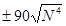
относительная разность между двумя измерениями длин линии в полигоне при рельефе местности:
равнинном - 1:1000;
горном - 1:500;
невязка двойного
нивелирного хода при длине хода L (км) - 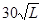
3.18. Восстановление положения прямых должно производиться вешением, т.е. установкой вех по направлению прямой линии.
3.19. При восстановлении и закреплении трассы необходимо вести журнал выносок, в который заносят схемы расположения установленных знаков, расстояния до них от оси дороги и трубопровода, а также направления выносок и расстояния до знаков от осей дороги и трубопровода.
3.20. Восстановление и детальную разбивку кривых участков трассы в нормальных условиях необходимо выполнять способом прямоугольных координат от тангенсов, а в стесненных условиях - способом прямоугольных координат от хорд или другими способами.
3.21. Все знаки рабочей разбивки устанавливают не реже чем через 20 м. Разбивка границ полосы отвода земель под строительство трубопровода и дороги должна производиться после закрепления осей трубопровода и дороги; величину предела полосы вымеряют и отмечают на местности от линии разбивки осей трубопровода и дороги.
Ширина полосы отвода должна соответствовать действующим нормам отвода земель (СН 452-73. «Нормы отвода земель для магистральных трубопроводов»).
Границу полосы отвода обозначают на местности с участием представителей местных земельных органов столбами или кольями, которые устанавливают на расстоянии не менее чем через 100 м.
Окрашивают знаки разбивки полосы отвода в яркие цвета, чтобы они были хорошо видны на местности.
На лесных участках трассы отмечаются крайние деревья, выходящие за границы полосы отвода, которые должны остаться неспиленными. Это необходимо для контроля расчистки трассы от леса по оставшимся знакам границы полосы отвода земель.
3.22. При расчистке трассы от леса необходимо принимать возможные меры для сохранения знаков, обозначающих ось будущего трубопровода и дороги, а в случае нарушения этих знаков - по окончании работ по расчистке трассы их необходимо восстановить.
3.23. При строительстве временных дорог на участках трассы, покрытых древесной растительностью, до начала строительства необходимо счистить дорожную полосу от леса и кустарника.
3.24. Лесосечные работы и строительство временных дорог в лесах производят по согласованию с исполнительными комитетами местных Советов депутатов трудящихся, государственными органами лесного хозяйства и другими органами в соответствии с законодательством Союза ССР и союзных республик.
Строительно-монтажные работы должны осуществляться способами, не вызывающими ухудшения противопожарного и санитарного состояния лесов и условий их воспроизводства.
3.25. К расчистке трассы приступают после получения специального разрешения - лесорубочного билета (ордера), который оформляется дирекцией строящегося объекта и передается строительной организации, ведущей лесосечные работы.
3.26. Расчистку полосы отвода (дорожной и трубопроводной) от лесной растительности следует выполнять преимущественно механизированным способом и с опережением начала строительно-монтажных работ.
3.27. На болотах, обводненных участках трассы (поймах рек и др.) расчистка дорожной полосы должна производиться с учетом климатических особенностей района, без нарушения геологических условий и водного режима.
Расчищать дорожную полосу на болотах следует преимущественно в осенне-зимний период, после замерзания верхнего покрова.
На участках трассы, на которых сооружение временных дорог намечается в весенне-летний период, расчистку следует производить заблаговременно. Это обеспечивает частичное осушение дорожной полосы.
3.28. При вырубке леса на дорожной полосе валка деревьев с корнями и корчевка пней не допускаются. Стволы деревьев необходимо спиливать заподлицо с поверхностью земли при устройстве временных дорог с деревянным покрытием и основанием, при сооружении зимних дорог, а также при возведении земляного полотна с высотой насыпи до 1,5 м. Мелкий кустарник приминают.
Пни высотой не более 10 см разрешается оставлять при возведении земляного полотна временных дорог с насыпью высотой более 1,5 м.
3.29. Корчевку пней и удаление крупных корней, оставшихся после корчевки, необходимо производить на участках, где проектом предусмотрено полное удаление слоя торфяной залежи с отсыпкой земляного полотна на минеральное основание.
3.30. Пни должны корчеваться механизированным или взрывным способом с последующим их захоронением в пределах строительной полосы. Для механизированной корчевки пней диаметром до 30 см следует применять бульдозеры или корчеватели-собиратели на тракторе мощностью 100 - 130 л.с. Пни диаметром 40 - 50 см, особенно с вертикальными корнями, следует удалять корчевателем на тракторе мощностью не менее 130 л.с. или применять взрывной способ.
3.31. Численный состав бригады, количество машин и оборудования для расчистки трассы от лесной растительности следует подбирать, исходя из ширины строительной полосы и темпов строительств линейной части магистральных трубопроводов.
3.32. На болотах и обводненных участках для предохранения дорожной полосы от размывов и разрушений и обеспечения устойчивости земляного полотна и конструкции дорожной одежды в процессе эксплуатации необходимо до начала сооружения временных дорог устраивать водоотводные сооружения.
3.33. Конструкции водоотводных сооружений зависят от конкретных гидрогеологических условий, их размеры назначают на основании гидравлических расчетов, но не менее минимальных, установленных нормативными документами (СН 449-72, см. прил. 7).
3.34. При переходе дорог через болотистые участки предусматривают водоотводные канавы, которые размещают на расстоянии 3 - 4 м от кромки проезжей части дороги.
Крутизну откосов канав в торфах с ненарушенной структурой следует принимать 1:1, а глубину канав и ширину их по дну - не менее 0,8 м. Продольный уклон канав должен быть не менее 0,1 %.
3.35. Разработку водоотводных канав осуществляют одноковшовыми экскаваторами болотной модификации, общестроительными одноковшовыми экскаваторами с использованием перекладных сланей, а также плужными канавокопателями.
Канавы устраивают за один проход экскаватора или канавокопателя. Вынутый из канавы грунт укладывают с низовой стороны в виде призмы.
3.36. В местах пересечения временными дорогами водотоков необходимо устраивать малые водопропускные искусственные сооружения (мосты и трубы) в соответствии с требованиями СНиП II-Д.5-72, СНиП II-Д.7-62 и СНиП III-43-75 (см. прил. 7).
3.37. На переходах через большие и малые водотоки строят мосты на свайных, рамных и ряжевых опорах; при пересечении оврагов, суходолов и мелких водотоков строят деревянные мосты преимущественно на рамных опорах.
Мосты необходимо рассчитывать на нормативную нагрузку в виде колонны автомобилей массой по 30 т (Н-30) и одиночную тяжелую нагрузку в виде колесной массой 80 т (НК-80), а также на гусеничную нагрузку массой 60 т (НГ-60). Допускаемый прогиб прогонов балочных деревянных мостов от временной нагрузки в зависимости от длины пролета l принимается от 1/180 l до 1/250 l.
Для прохода широкогабаритных гусеничных и колесных машин мосты следует сооружать габаритом Г-7 (ширина проезжей части 4,5 м) для однополосных дорог и Г-14 (ширина проезжей части 10 м) - для двухполосных.
3.38. В качестве водопропускных сооружений могут быть использованы металлические и железобетонные трубы с обеспечением необходимой площади отверстия. На болотных просадочных грунтах предпочтение следует отдавать бесфундаментным металлическим гофрированным трубам, работающим совместно с окружающим их грунтом насыпи.
3.39. Водопропускные трубы следует устраивать на периодически действующих водотоках, а отверстия их определять, исходя из безнапорного режима работы в зависимости от площади бассейна стока, величины осадков (паводка, ливней), впитываемости, уклона лога, скорости течения воды и т.п.
3.40. Водопропускные трубы следует засыпать мягким минеральным грунтом, укладываемым горизонтальными слоями по всей длине трубы одновременно с обеих ее сторон на одинаковую высоту с послойным уплотнением. Высота засыпки над верхом трубы должна быть не менее 0,5 м, а ширина засыпки поверху должна быть не менее диаметра трубы плюс 1 м.
3.41. Строительство искусственных сооружений необходимо начинать после расчистки дорожной полосы и заканчивать до подхода бригад, ведущих сооружение земляного полотна и устройство дорожной одежды.
3.42. Производство работ по устройству земляного полотна следует выполнять в соответствии с проектом производства работ и требованиями глав СНиП III-8-76 по земляным сооружениям, СНиП II-Д.5-72 и СНиП III-Д.5-73, а также СН 449-72 (см. прил. 7).
3.43. Насыпи по всей ширине отсыпают горизонтальными слоями с равномерным уплотнением, при этом различные слои грунтов размещают в теле насыпи строго по проекту.
3.44. Первый слой насыпи выше уровня болота отсыпают способом «от себя», с устройством через каждые 50 м разъездов высотой не менее 0,5 м для разворота и обгона автосамосвалов, бульдозера и грунтоуплотняющей машины.
Отсыпку последующих слоев ведут захватками длиной до 50 м каждая. В границах захватки насыпь доводят до проектной высоты, после чего в таком же порядке выполняют работы на смежной захватке. Автосамосвалы разворачиваются на разъездах у начала захватки и подаются на разгрузку задним ходом по торцевой части насыпи.
3.45. Каждый слой грунта отсыпают в направлении от дальнего конца к началу захватки. Уплотняют грунт грунтоуплотняющей машиной или катком (прицепным, самоходным). Разравнивают и уплотняют грунт вслед за его отсыпкой. Работа бульдозера и грунтоуплотняющей машины должна быть организована так, чтобы к окончанию отсыпки слоя на захватке разрыв между выгрузкой, разравниванием и уплотнением грунта был минимальным, а уплотнение слоя на этой части захватки заканчивалось к подходу очередного самосвала для пропуска его в конец захватки с целью отсыпки следующего слоя; грунтоуплотняющую машину и бульдозер при этом отводят на смежную, ранее отсыпанную часть насыпи.
3.46. На болотах I типа с мощностью торфяной залежи до 4 м земляное полотно, отсыпаемое непосредственно на торфяное основание, можно возводить из минерального грунта, разрабатываемого из боковых резервов экскаватором-драглайном с вылетом стрелы 10 - 13 м (рис. 19, а). Экскаватор движется вдоль оси резерва. Извлекаемый торф укладывают в отвал 3 на противоположную от насыпи сторону резерва, а минеральный грунт - в отвал 1.
После подсыхания минерального грунта производят профилирование земляного полотна до проектных размеров и резерв засыпают ранее вынутым торфом (рис. 19, б). Если минерального грунта для отсыпки земляного полотна недостаточно, предусматривают частичный подвоз его из сосредоточенных карьеров.
3.47. Возведение земляного полотна осуществляет механизированная колонна, укомплектованная необходимыми дорожно-строительными машинами и механизмами.
Механизированная колонна должна состоять из специализированных бригад, перемещающихся одна за другой в определенной технологической последовательности и выполняющих работы по устройству продольно-поперечного деревянного настила, хворостяной выстилки, мохорастительного покрова и по возведению земляного полотна.
Темп возведения земляного полотна зависит от принятого способа его сооружения, дальности расположения карьера, грузоподъемности и количества транспортных средств, наличия и состояния подъездных дорог к карьеру.
Рис. 19. Устройство земляного полотна из боковых резервов:
1 - отвал минерального грунта; 2 - боковой резерв; 3 - отвал торфа; 4 - насыпь из минерального грунта; 5 - водоотводная канава
3.48. Откосы уплотняют двумя способами - грунтоуплотняющими машинами, рабочие органы которых могут перемещаться непосредственно по бровочной части отсыпаемого слоя, и катками путем временного уширения насыпи сверх проектного очертания не менее 0,5 м с каждой стороны с последующей срезкой рыхлого грунта.
Уплотнение производится послойно при толщине каждого слоя не более 0,25 м. Уплотнение начинают от бровок к середине насыпи.
Перед срезкой грунта с откоса верхняя площадка насыпи должна быть спланирована, а бровка отмечена колышками через 20 м. Грунт у основания насыпи рекомендуется предварительно убрать бульдозером до проектной линии заложения откоса.
3.49. Планировку откосов осуществляют автогрейдерами или бульдозерами с откосниками в два приема. Сначала планируют верхнюю часть откоса при передвижении машины по основной площадке насыпи или по выровненной берме выемки. Затем откосник переставляют в верхнее положение и планируют нижнюю часть откоса. При этом машина передвигается по выровненной берме насыпи или основной площадке выемки. Срезанный грунт планируют на берме, а с основной площадки выемки подбирают скрепером или перемещают бульдозером. Для достижения нужной ровности и крутизны откоса требуется один-два прохода планировщика по одному следу.
3.50. Планировку верхней части откоса производят, ориентируясь на разбивочные колышки бровки, выставленные через каждые 20 м. При планировке нижней части откоса режущая часть откосника должна перемещаться по спланированной поверхности его верхней части.
3.51. В процессе работы необходимо проверять ровность и крутизну откоса шаблоном-откосником и выявленные дефекты устранять повторными проходами планировщика.
3.52. Тип укрепления откосов и обочин следует назначать с учетом размеров земляного полотна, грунтов, слагающих откос и его основание; климатических, топографических и гидрологических условий; наличия местных материалов для укрепительных работ; заданных сроков строительства и результатов технико-экономических расчетов.
3.53. Обочины земляного полотна укрепляют покрытием из галечно-гравийного и другого дренирующего материала или отходов асбестодобывающих предприятий слоем 5 - 10 см; покрытием грунтами, обработанными вяжущими материалами; обработкой грунта химическими добавками и вяжущими материалами.
3.54. При продолжительном сроке службы временной дороги (до 5 лет) незатопляемые откосы укрепляют засевом многолетних трав. При этом следует использовать семена трав трех видов - злаковых рыхлокустовых, корневищевых и стержнекорневых, а также бобовых; подбирать видовой состав трав и назначать установленные нормы высева с учетом местных природных условий; при необходимости создания дернового покрова в предельно короткие сроки нормы высева семян увеличивать в два-три раза; строго соблюдать установленные агротехнические требования; работы по посеву трав вести механизированным способом с предварительным нанесением на откосы слоя растительного грунта толщиной 10 - 15 см, а в благоприятных условиях применять гидропосев без использования растительного грунта.
3.55. Откосы земляного полотна из глинистых, пылеватых, переувлажненных грунтов на участках, где возможны местные оплывы грунта, следует укреплять сборной железобетонной обрешеткой в комплексе с посевом трав.
3.56. Подтопляемые откосы земляного полотна следует укреплять сборными бетонными и железобетонными конструкциями, облицовкой из монолитного бетона, а также наброской из камня слабовыветривающихся пород и другими видами покрытий, в зависимости от скорости течения воды и высоты наката волн.
3.57. Водоотводные канавы подлежат укреплению, если их проектируют для участков с грунтами, подверженными оплыванию в откосах или разрушению в результате периодического увлажнения - высушивания, промерзания - оттаивания, а также если расчетная скорость течения в канавах воды будет превышать допустимую скорость для данного вида грунта. Уклон обочин, укрепляемых посевом трав, может быть уменьшен до 0,04.
ДОРОГИ С ГРУНТОВЫМИ УЛУЧШЕННЫМИ, ГРАВИЙНЫМИ И ЩЕБЕНОЧНЫМИ ПОКРЫТИЯМИ
3.58. На земляном полотне, конструкции которого приведены в пп. 2.6 - 2.16 настоящей Инструкции, временный проезд осуществляют как с устройством дорожной одежды, так и без нее, если грунт насыпи соответствует требуемой прочности. В последнем случае верхний слой земляного полотна должен быть спрофилирован и уплотнен.
3.59. Покрытия из заранее улучшенных грунтов устраивают путем их отсыпки на предварительно спланированное и уплотненное земляное полотно автосамосвалами с последующим разравниванием отсыпанного слоя бульдозером или автогрейдером и уплотнением катками.
При устройстве грунтовых улучшенных покрытий непосредственно на дороге путем смешения скелетных добавок с верхним слоем грунта земляного полотна производят сначала рыхление верхнего слоя земляного полотна дисковой бороной, фрезой или плугом на глубину, равную толщине улучшенного покрытия, а затем отсыпку добавок с распределением их по ширине земляного полотна автогрейдером или бульдозером с изменяемым наклоном отвала и перемешивание добавок с разрыхленным грунтом. Далее производят профилирование и выравнивание поверхности смешанного слоя покрытия автогрейдером и уплотнение катками или гружеными автосамосвалами с поливкой его водой до оптимальной влажности.
3.60. Гравийной покрытие устраивают послойно путем отсыпки автосамосвалами гравийного материала на спланированное и уплотненное земляное полотно, разравнивая и уплотняя его. Если грунт земляного полотна в момент устройства покрытия продавливается под колесами автомобиля, отсыпку гравийного материала следует вести с «головы», надвигая и разравнивая гравий бульдозером.
Слой гравийного материала уплотняют катками на пневматических шинах. Уплотняемые слои необходимо увлажнять.
Уплотнение заканчивают после прекращения осадки уплотняемого слоя от прохода грунтоуплотняющей машины. В ходе уплотнения гравийного материала необходимо осуществлять контроль за соблюдением заданной толщины покрытия, его ровности и нужного поперечного профиля.
3.61. Необходимое количество машин и механизмов для устройства дорожной одежды приведено в табл. 10, а состав бригады в табл. 11.
Таблица 10
|
Марка |
Количество машин или механизмов |
Операция технологического процесса |
|
|
Автогрейдеры или грейдер прицепной |
ДЗ-31-1 (Д-469А), ДЗ-61А (Д-710А) |
1 |
Подготовка верхнего слоя земляного полотна, перемешивание материалов, разравнивание смеси, профилирование покрытия |
|
Дорожная фреза |
ДС-18А (Д-530А) |
1 |
Размельчение и перемешивание слоя покрытия или основания |
|
Автомобили-самосвалы |
ЗИЛ, ММЗ-555, МАЗ-503Б, ТАТРА-148, КрАЗ-256Б, КамАЗ-5510 |
Определяются по расчету |
Транспортировка грунта оптимального состава из карьеров на земляное полотно, подвозка гравийного или щебеночного материала |
|
Катки моторные или прицепные |
ДУ-47А, ДУ-31А (Д-627), ДУ-39А (Д-703А) |
1 |
Уплотнение земляного полотна, смесей, покрытий |
|
Бульдозер |
ДЗ-27С (Д-532С), ДЗ-18 (Д-493А) |
1 |
Разравнивание и планирование оптимальной смеси, щебня, гравия |
|
Трактор |
Т-100мГП, Т-130 |
2 |
Буксировка прицепных механизмов |
|
Поливо-моечная машина |
ПМ-130П |
1 |
Поливка слоев дорожной одежды |
|
Экскаватор одноковшовый |
ЭО-4121 |
1 |
Разработка грунта в карьере |
Таблица 11
|
Разряд (класс) |
Число |
|
|
Строительный мастер |
- |
1 |
|
Водитель автогрейдера |
V |
1 |
|
Водитель автосамосвала |
2 - 3 |
Определяется расчетом |
|
Машинист моторного катка |
IV - V |
1 |
|
Бульдозерист |
VI |
1 |
|
Тракторист |
IV |
2 |
|
Водитель поливо-моечной машины |
2 - 3 |
1 |
|
Машинист экскаватора |
VI |
1 |
|
Дорожные рабочие |
III |
7 |
ДОРОГИ С ДЕРЕВОГРУНТОВЫМИ И СБОРНО-РАЗБОРНЫМИ КОНСТРУКЦИЯМИ ДОРОЖНЫХ ОДЕЖД
3.62. Устройство деревогрунтовой дорожной одежды осуществляют в два этапа (рис. 20).
На первом этапе сооружают деревянную конструкцию дерево-грунтовых дорожных одежд методом последовательного наращивания по длине. При этом работы должны производиться участками, равными шагу продольных лежней.
Продольные лежни и бревна сплошного поперечного настила транспортируют к месту производства работ трелевочным трактором. Продольные лежни укладывают с перекрытием на 0,75 - 1 м так, чтобы в одном поперечном сечении не находилось более одного стыка.
На продольные лежни раскладывают бревна сплошного поперечного настила, доставляемые трелевочным трактором по готовому настилу с загрузкой поперек наклонной платформы. Бревна настила плотно подгоняют друг к другу.
На прямых участках трассы комли бревен ориентируют в разные стороны, на кривых - в наружную сторону кривой.
Рис. 20. Схема устройства деревогрунтовой дорожной одежды:
1 - прижимные бревна; 2 - автосамосвал; 3 - бульдозер; 4 - трелевочный трактор; 5 - сплошной поперечный настил из бревен; 6 - продольные лежни
После подгонки бревен поперечный настил обжимают шестьюдесятью проходами трактора со скоростью не более 3 км/ч по челночной схеме движения: первые - посередине настила, а затем по его краям.
Сверху над крайними продольными лежнями укладывают прижимные бревна, которые скрепляют с лежнями проволочной скруткой через 2 - 3 м.
Прижимные бревна укладывают в одну линию с зазором между торцами 10 - 15 см для обеспечения стока воды.
Ко второму этапу сооружения деревогрунтовой дорожной одежды - устройству грунтового покрытия, приступают после окончания сооружения на всей длине трассы основания с деревянным настилом.
Для уменьшения расхода привозного дренирующего материала покрытия поперечный настил покрывают слаборазложившимся длинноволокнистым торфом или мхом толщиной 5 - 10 см. Торф доставляют автосамосвалом, разгружают и равномерно распределяют бульдозером.
После распределения торфа отсыпают дренирующий слой грунта. Транспортируют и распределяют дренирующий материал автосамосвалами и бульдозерами. В процессе транспортировки, с целью уплотнения материала покрытия, на готовом участке необходимо регулировать движение автосамосвалов по всей ширине проезжей части.
3.63. При укладке деревогрунтовых одежд на участках болот I типа с рыхлым водонасыщенным грунтом и на болотах II типа в цикл технологических работ добавляют предварительную раскладку хворостяной выстилки.
Хворостяную выстилку устраивает по всей ширине дороги из порубочных остатков двумя слоями толщиной по 20 - 30 см, ориентируя при этом сучья в одном слое вдоль оси дороги, а в другом - перпендикулярно. После укладки выстилку уплотняют трелевочным трактором.
3.64. Для устройства деревогрунтовых дорожных одежд используют нестроевую древесину хвойных и лиственных пород без ограничения сортности, заготовляемую при расчистке полосы отвода.
3.65. Для засыпки деревянного сплошного поперечного настила используют торфяные, дренирующие и слабодренирующие местные грунты, недренирующие местные грунты, улучшенные крупнозернистыми добавками, а также грунтовые оптимальные смеси.
3.66. Технологию устройства дорожной одежды со сборно-разборным деревянным покрытием назначают, исходя из конструкции дорожной одежды и оснащения строительного подразделения машинами и механизмами.
3.67. Для сооружения дорожной одежды следует применять автокраны грузоподъемностью не менее 2 т при вылете стрелы не менее 8 м, бортовые автомашины типа КрАЗ, «Урал», МАЗ или транспортные средства на резинометаллических гусеницах.
3.68. Загрузку элементов дорожной одежды на транспортные средства необходимо производить в последовательности, обратной выполнению технологической операции на одном участке.
3.69. Устройство дорожной одежды осуществляют двумя способами:
1) автокраном, передвигающимся по укладываемому покрытию с транспортировкой элементов дорожной одежды и болотоходом, следующим параллельно оси строящейся дороги;
2) автокраном, передвигающимся по укладываемому покрытию с транспортировкой элементов дорожной одежды бортовыми автомашинами, перемещающимися по готовому покрытию.
3.70. Технологический процесс устройства дорожной одежды с использованием транспортного средства на резинометаллических гусеницах, передвигающегося параллельно оси строящейся дороги, выполняют в следующем порядке (рис. 21).
Автокран, двигаясь задним ходом по уложенным щитам покрытия, останавливается на последнем щите, не доезжая до его конца примерно 1,5 м, и ставится на тормоз и аутригеры. Болотоход, нагруженный элементами дорожной одежды, подъезжает к зоне работы автомобильного крана и останавливается. Затем рабочие стропуют и подают автокраном элементы основания дорожной одежды на места их укладки.
Продольные лежни основания соединяют по длине между собой скрутками из металлической проволоки. При многоярусном основании лежни последующего слоя основания с предыдущим соединяют строительными скобами или ершами.
После устройства основания укладывают щиты покрытия. При монтаже щиты покрытия стропуют за монтажные петли и укладывают в проектное положение на продольные лежни, соединяя при этом соседние щиты между собой.
Под стыки щитов покрытия укладывают пакеты из двух-трех бревен. До соединения щитов наезд на них автомобильного крана запрещается.
Щиты покрытия скрепляют с основанием металлическими скобами.
На укладку продольных и поперечных лежней, а также щитов покрытия необходима бригада, состоящая из шести-семи рабочих.
Рис. 21. Устройство дорожной одежды со сборным колейным покрытием из деревянных щитов:
а - устройство основания; б - устройство сборного колейного покрытия; 1 - поперечины; 2 - сборный деревянный щит покрытия; 3 - автомобильный кран; 4 - транспортное средство на резинометаллических гусеницах
3.71. Последовательность устройства дорожной одежды с использованием автокрана и бортовых машин отличается от технологии устройства дорожной одежды, приведенной в п. 3.70, тем, что транспортируют элементы дорожной одежды бортовыми машинами, передвигающимися по готовому покрытию задним ходом (рис. 22 и прил. 5, 6);
Рис. 22. Устройство дорожной одежды на слабых грунтах со сборным колейным покрытием из деревянных щитов на трехъярусном деревянном основании:
а - укладка поперечных лаг нижнего яруса основания; б - укладка продольных лаг промежуточного яруса основания; в - укладка поперечин верхнего яруса основания; г - укладка сборного колейного покрытия из деревянных щитов; 1 - поперечные лаги; 2 - продольные лаги; 3 - автомобильный кран; 4 - сборный деревянный щит покрытия; 5 - бортовой автомобиль
ДОРОГИ С ПОКРЫТИЕМ ИЗ ЖЕЛЕЗОБЕТОННЫХ ПЛИТ
3.72. Устройство дренирующего слоя основания для дорог с покрытием из железобетонных плит включает погрузку карьерных материалов на автотранспорт, транспортировку и отсыпку их на земляное полотно, разравнивание и уплотнение. Песчаный грунт разгружают на проезжую часть дороги, который затем по всей ее ширине распределяют автогрейдером или бульдозером и придают проезжей части дороги требуемый поперечный профиль.
Правильность поперечных уклонов контролируют шаблоном. После профилирования приступают к укатке. Укатку производят прицепными или самоходными катками. В процессе укатки периодически проверяют ровность песчаного основания трехметровой рейкой. Толщину слоя основания контролируют закладкой контрольных лунок по оси дороги. Не следует допускать уменьшения толщины подстилающего слоя от проектной величины более чем на 2 - 3 см. На окончательно подготовленное основание укладывают железобетонные плиты покрытия.
3.73. Перед началом укладки покрытия необходимо восстановить ось колейной дороги с разбивкой кривых колышками. По колышкам через 8 - 10 м отмечают кромку колесопроводов. Наружную кромку плит колесопровода укладывают точно по шнуру. Положение плит второго колесопровода определяют по шаблону.
В каждом колесопроводе плиты укладывают так, чтобы верхние плоскости стыка двух плит в ненагруженном состоянии находились на одном уровне.
3.74. На прямых участках дороги плиты укладывают с зазором 1 - 1,5 см. Для этого при укладке плит в стыках устанавливают прокладку толщиной 1 см.
3.75. Уложенные плиты должны плотно прилегать к основанию и не иметь перекосов по отношению к ранее уложенным плитам. На кривых участках необходимо делать уширение земляного полотна и проезжей части. Уширение проезжей части осуществляют путем устройства на уширенной части земляного полотна гравийного или грунтощебеночного покрытия.
3.76. При устройстве колейного покрытия уширение каждого колесопровода с внутренней стороны кривой принимают согласно данным табл. 12.
Таблица 12
|
Величины уширения колесопроводов, м |
|
|
50 |
0,6 |
|
60 |
0,5 |
|
80 |
0,4 |
|
100 |
0,4 |
|
150 |
0,3 |
|
200 |
0,2 |
3.77. Для уменьшения разности вертикальных зазоров между железобетонными плитами забивают стыковые бруски. Превышение одной плиты над другой в стыке после забивки стыковых брусьев не должно быть больше 0,5 см.
3.78. Плиты следует укладывать автокраном. Вылет стрелы автокрана должен обеспечить укладку или подъем плиты длиной 3 м как впереди, так и позади укладочного механизма. Все автомобильные краны, отвечающие этим требованиям, могут быть использованы при постройке дорог с железобетонным покрытием. При перевозке плит между ними устанавливают деревянные прокладки.
3.79. При укладке плит автокраном на однополосной дороге автокран движется задним ходом по ранее уложенным плитам и устанавливается так, чтобы ось задних колес располагалась на расстоянии 1 - 1,2 м от конца последних уложенных плит. Железобетонные плиты доставляют к месту производства работ на бортовых машинах. Автомобили с плитами подходят к автокрану задним ходом, разворачиваясь на ближайшем разъезде или устроенных разворотных площадках. На двухполосной дороге автомобиль с плитами передвигается по порожней полосе, останавливается сбоку от автокрана и, по мере укладки плит, передвигается параллельно последнему.
3.80. На двухполосных дорогах с деревогрунтовым основанием плиты доставляют только по готовому покрытию.
3.81. После укладки колейного покрытия обочины и межколейное пространство должны быть засыпаны дренирующим грунтом с последующим его разравниванием автогрейдером. Нож грейдера устанавливают так, чтобы на поверхности плит оставался слой грунта толщиной 2 - 3 см. После разравнивания грунт уплотняют. Слой грунта, оставшийся на поверхности плит, в процессе эксплуатации сдувается.
3.82. Перечень машин и оборудования, необходимых для строительства дороги с покрытием из железобетонных плит, и состав бригады приведены в табл. 13, 14.
Таблица 13
|
Марка машин |
Количество машин |
Операция технологического процесса |
|
|
Автомобильный кран |
КС-1562, КС-2561Е, КС-4571 |
2 |
Погрузка плит на автомобили и укладка их на основание дорожной одежды |
|
Экскаватор |
ЭО-4121 |
1 |
Разработка и погрузка грунта в карьере для возведения насыпи, устройства основания, присыпных обочин и засыпки межколейного пространства |
|
Бортовые автомобили и автосамосвалы |
ЗИЛ -131, «Урал-375Д» ЗИЛ-ММЗ-555, КрАЗ-255Б, КамАЗ-4310 КрАЗ-256Б, КамАЗ-5510 |
Определяется расчетом |
Доставка грунта, железобетонных и деревянных плит к месту строительства дороги |
|
Автогрейдер |
ДЗ-31-1 (Д-469А) |
1 |
Разравнивание грунта, профилировка основания |
|
Каток |
ДУ-31А (Д-627А) |
1 |
Уплотнение основания, обочин и межколесного пространства |
Таблица 14
|
Разряд |
Число |
|
|
Машинист экскаватора |
V |
1 |
|
Такелажник |
II |
2 |
|
Водитель автокрана |
- |
2 |
|
Монтажник |
IV |
1 |
|
Водители автосамосвалов и бортовых автомобилей |
- |
Определяется расчетом |
|
Машинист автогрейдера |
VI |
1 |
|
Машинист катка |
V |
1 |
ЗИМНИЕ ДОРОГИ
3.83. Строительство зимних дорог осуществляют в два этапа в определенной технологической последовательности.
На первом этапе выполняют подготовительные работы, включающие:
восстановление трассы согласно проекту;
расчистку дорожной полосы от леса, пней и кустарника;
планировку и земляные работы по устройству полотна дороги;
проминку и промораживание верхнего слоя торфяной залежи;
устройство ледовых переправ;
заготовку материалов для усиления ледяных переправ.
На втором этапе производят работы по созданию снежного (снежно-ледяного) полотна на слабом грунте.
3.84. При подготовке полотна дороги необходимо проводить мероприятия по ускорению промораживания верхнего торфяного покрова болот. Для этого следует произвести проминку мохорастительного покрова для уплотнения верхней корки болота и выжимания воды на поверхность, а также расчистку снежного покрова с последующим его уплотнением и оледенением. Для уплотнения мохорастительного покрова на болотах следует использовать тракторы болотной модификации. Для лучшего уплотнения к трактору прицепляют каток или гладилку. Гладилка представляет собой деревянный или металлический лист, загруженный балластом, с приподнятой передней частью. Масса гладилки от 4500 до 6000 кг при удельном давлении 0,2 - 0,5 кгс/см2. Плотность снега при этом получается неравномерной, поэтому гладилку необходимо применять перед проходом катков для увеличения эффективности их работы.
Минимальная глубина промерзания, обеспечивающая безопасное движение автопоездов, приведена в табл. 15.
Таблица 15
|
Наименьшая толщина промерзшего верхнего слоя болота, см |
||
|
с травянистой растительностью |
с моховой растительностью |
|
|
Автомобили с нагрузкой на ось до 7 тс; гусеничные тягачи или тракторы массой до 12 т |
12 - 15 |
15 - 20 |
|
Автомобили с нагрузкой на ось до 12 тс; гусеничные тягачи и тракторы массой до 25 т |
15 - 20 |
25 - 30 |
|
Автомобили с нагрузкой на ось свыше 12 тс; груженые автомобили с прицепами |
25 - 30 |
35 - 40 |
Примечание. Минимальная толщина промерзания болот должна быть на 15 - 20 % больше норм, данных в таблице для заторфованного мерзлого грунта и тундрового мерзлого грунта, перемешанного с моховым покровом.
В местах, где проход трактора невозможен, делают прошпаливание, заключающееся в укладке поперечных бревен длиной 5 - 6 м, толщиной 10 - 14 см через каждые 0,4 - 0,7 м.
3.86. На незамерзающих или плохо промерзающих болотах устраивают дороги, конструкции которых аналогичны конструкциям временных дорог, используемых в летний период (см. пп. 3.85 - 3.90 и рис. 5).
3.87. В районах с устойчивой многоснежной зимой строительство и содержание дорог I и II типов можно осуществлять методом уплотнения снега с предварительной проминкой мохорастительного слоя. Этот метод обладает рядом преимуществ:
полная механизация строительства и содержания дорог;
периодическое уплотнение свежевыпавшего снега в течение зимы позволяет увеличивать высоту полотна дороги, что уменьшает заносимость зимника снегом.
3.88. Максимально допустимая высота пней в ходе расчистки трассы при различной глубине снега с начальной плотностью 0,15 - 0,25 г/см3 и конечной 0,6 г/см3 приведена ниже.
|
Глубина снега, см |
30 |
40 |
50 |
60 |
70 |
|
Допускаемая высота пней и других препятствий, см |
4 - 5 |
5 - 8 |
6 - 10 |
10 - 12 |
12 - 14 |
3.89. Снежное покрытие устраивают путем уплотнения снега в пределах проезжей части.
При начале строительства с момента выпадения первого снега приступают к его уплотнению без предварительного перемешивания и измельчения. Уплотнение снега нужно начать при толщине снегового покрова до 10 - 15 см. Уплотнение снега тонкими слоями следует осуществлять прицепными пневмокатками массой 10 - 15 т, гладкими деревянными катками с набитыми на валец в шахматном порядке продольными рейками, пригруженными многополозными санями. При уплотнении снега тонкими слоями перед проходом катка необходимо использовать гладилку для планирования и осадки снега. Снег слоями толщиной более 25 см уплотняют после предварительного измельчения и перемешивания деревянной бороной, ребристым катком и фрезами.
При перемешивании снега деревянные бороны соединяют в комплект по нескольку штук (рис. 23). Работы по измельчению и перемешиванию снега осуществляют в следующем порядке: после двух-трех проходов по трассе облегченной бороной, разрушая и измельчая естественную структуру снега по всей ширине, укатывают снег гладким катком, за два-три прохода по одному следу, не допуская перерыва между этими операциями. Первый проход каток должен совершать без балласта. Через 4 - 5 ч после укатки дорога пригодна для движения тракторов и тракторных поездов.
Сцепку борон должны производить двое рабочих, один из которых координирует действия тракториста и сцепщика.
При рыхлении плугами, ребристыми катками, боронами необходимо делать два-три прохода по каждому следу со скоростью перемещения 6 - 8 км/ч.
Рыхление и перемешивание снега при толщине слоя до 20 см, а также при нулевой температуре производить не рекомендуется.
3.91. Устраивать дороги способом уплотнения предварительно перемешанного снега можно при глубине целинного снежного покрова до 60 см, уплотняя его катками. Удельное давление уплотняющих орудий в зависимости от температуры и плотности снега не должно превышать предела его несущей способности (табл. 16).
3.92. При устройстве снежной дороги на участках, где образовался покров более 60 см, проезжую часть очищают от снега навесными плужными двухотвальными снегоочистителями, а также тракторными или роторными снегоочистителями до толщины слоя снега 15 - 20 см, который уплотняют прицепными катками на пневматических шинах массой 25 - 30 т за два-три прохода по одному следу.
Рис. 23. Схемы соединения борон
Таблица 16
|
Давление (кгс/см2) при температуре, °С |
|||
|
-5 |
-10 |
-20 |
|
|
До 0,2 |
0,90 |
1,3 |
1,35 |
|
0,3 |
1,40 |
1,80 |
2,20 |
|
0,4 |
3,50 |
4,20 |
4,90 |
|
0,5 |
10,40 |
5,20 |
- |
3.93. Временные зимние дороги со снежно-ледяным покрытием устраивают толщиной 25 см. Для устройства таких дорог свежевыпавший снег толщиной до 5 см на ширину проезжей части поливают водой до образования слоя снегольда толщиной 8 - 10 см. После поливки водой слой уплотняют пневмокатками массой 25 - 30 т или колесами проходящих автомобилей. Расход воды на 1 км в течение сезона при ширине проезжей части 5; 8 и 10 м составляет соответственно 600, 850 и 1200 м3.
3.94. На промороженных заболоченных участках для передвижения колесного и гусеничного транспорта следует сооружать зимние дороги простейшего типа - снежные расчищаемые. Такие дороги сооружают с помощью снегоочистителей-треугольников, плужных снегоочистителей и снегороторных снегоочистителей.
В начале строительства такого зимника прокладывают пионерную траншею бульдозером или двухотвальным треугольником в зависимости от местности. Рыхлый снежный покров толщиной до 70 см и оставшийся снег до 40 см расчищают деревянным треугольником за трактором. При этом на замерзшем грунте оставляют слой снега толщиной 8 см, который при дальнейшей укатке проходящим транспортом будет выполнять функции выравнивающего слоя.
При необходимости срезки кочек и неровностей треугольник загружают мешками с грунтом. В зависимости от ширины расчищаемой полосы осуществляют несколько проходов треугольника, а за один проход освобождается от снега полоса в 3,5 - 4,5 м.
Для обеспечения наиболее прямой в плане трассы скорость движения тягача должна быть не более 2,5 км/ч. Откос снежного вала, получаемого в процессе расчистки полосы проезжей части, необходимо довести до 1:8, что уменьшает снегозаносимость дороги.
ЛЕДОВЫЕ ПЕРЕПРАВЫ
3.95. Строительство ледовой переправы зимника начинают с определения толщины льда по предварительно намоченной (при визуальной оценке) трассе, затем приступают к подготовке ледяной поверхности (очистке от снега, расчистке наплывов и торосов), усилению слабого ледяного покрова, подготовке противоналедных устройств и установке дорожных знаков, ограждений и приспособлений.
3.96. Определение толщины льда и восстановление трассы производится специальной группой обследования, которая идет впереди механизированной колонны на расстоянии 5 км.
Для определения толщины льда на переправе пробивают лунки на расстоянии 20 м от оси переправы по обеим ее сторонам. Расстояние между лунками в ряду принимают от 10 до 50 м, в зависимости от длины ледовой переправы и характера льда. Первую и последнюю лунки необходимо пробивать у берегов, в удалении от них не более чем на 2 - 3 м.
3.97. Минимальная толщина льда при температуре воздуха минус 1 °С, необходимая для безопасного пропуска через переправу автомобилей и гусеничных машин, приведена в табл. 17.
3.98. На кромках полосы переправы устраивают снежные валики высотой 20 - 30 см; чтобы уменьшить растекание воды, с внутренней стороны валиков укладывают жерди. Для обеспечения прочности намораживаемого льда между валиками перед поливкой водой укладывают слой хвороста.
Таблица 17
|
Масса, т |
Толщина льда, см |
|
|
Автомобиль с грузом |
6,5 |
35 |
|
То же или трактор |
8,5 |
39 |
|
« « « « |
10 |
40 |
|
« « « « |
20 |
55 |
|
« « « « |
25 |
65 |
|
« « « « |
30 |
75 |
|
« « « « |
40 |
95 |
Воду мотопомпой подают из проруби, которую делают на расстоянии не менее 40 - 50 м от оси переправы. Толщина каждого наливаемого слоя воды должна быть 0,5 - 1 см. При укладке в покрытие хвороста слой наливаемой воды можно увеличить до 2 - 3 см.
В отдельных случаях для ускорения намораживания на поверхность ледяного покрова набрасывают тонкие слои снега (3 - 5 см) или ледяной мелочи (до 10 - 15 см).
Время намораживания слоя необходимой толщины определяют по табл. 18.
Таблица 18
|
Толщина образующегося льда в течение 1 ч (см) при температуре воздуха, °С |
|||||||
|
-4 |
-5 |
-10 |
-15 |
-20 |
-25 |
-30 |
|
|
0 |
0 |
0 |
0,5 |
1,0 |
1,5 |
2,0 |
2,5 |
|
1 |
0 |
0 |
0,5 |
1,0 |
1,5 |
2,0 |
3,0 |
|
3 |
0 |
0 |
1,0 |
1,5 |
2,5 |
3,5 |
4,5 |
|
5 |
0 |
0,3 |
1,0 |
2,0 |
3,0 |
4,0 |
5,5 |
|
7 |
0,3 |
0,5 |
1,5 |
2,5 |
3,5 |
5,0 |
0,5 |
|
10 |
0,5 |
1,0 |
1,5 |
3,0 |
4,5 |
6,0 |
8,0 |
3.99. Наращивать слой более 2/3 толщины основного льда не следует во избежание подтаивания снизу основного льда.
3.100. Строительство зимних дорог и ледовых переправ должны выполнять передвижные механизированные колонны, состоящие из специализированных по видам работ бригад.
Ориентировочно колонна должна состоять из 25 - 30 чел. (из расчета односменной работы).
Комплект основных машин и оборудования, которыми оснащены механизированные колонны, приведены в табл. 19.
Таблица 19
|
Наименование машин, механизмов и оборудования |
Марки машин, механизмов и оборудования |
Количество |
|
|
Очистка дорожной полосы от лесной растительности |
Бульдозер |
ДЗ-27С (Д-532С), ДЗ-18 (Д-493А) |
1 |
|
Бензомоторная пила |
«Дружба-4», «Тайга-214» |
5 |
|
|
Корчеватель-собиратель |
ДП-3, ДП-21, ДП-25 |
1 |
|
|
Кусторез |
ДП-24 |
1 |
|
|
Машина для глубокого фрезерования кустарника |
МТП-42А |
1 |
|
|
Планировка грунтового основания после очистки полосы от лесной растительности |
Бульдозер |
ДЗ-27С (Д-532С); ДЗ-54С (Д-687С), ДЗ-18 (Д-493А) |
1 |
|
Устройство дорожного полотна |
Бульдозер |
ДЗ-27С, ДЗ-18 (Д-493А) |
1 |
|
Автогрейдер |
ДЗ-31-1 (Д-469А) |
1 |
|
|
Пневмокаток |
ДУ-31А (Д-627А) |
1 |
|
|
Кулачковый каток |
ДУ-26 (Д-615) |
1 |
|
|
Гладилка |
- |
1 |
|
|
Устройство снежного основания и покрытия |
Борона деревянная |
- |
1 |
|
Бульдозер |
ДЗ-54С (Д-687С) |
1 |
|
|
Автогрейдер |
ДЗ-31-1 (Д-469А) |
1 |
|
|
Снегоуплотняющая машина |
СУМ-3, СУМ-280, СУМ ГПИ 39-40 |
1 |
|
|
Поливо-моечная машина |
ПМ-130П |
1 |
3.101. Геодезическая группа по восстановлению и закреплению трассы должна быть обеспечена необходимым оснащением для производства работ (транспортными средствами, палатками, спецодеждой, техническими материалами и пр.).
3.102. В каждой геодезической группе должен быть назначен старший группы.
Перед установкой пикетов, реперов и выносных знаков нужно тщательно осмотреть местность и убедиться в наличии знаков, указывающих на присутствие подземных коммуникаций.
3.103. Место для лагеря следует выбирать сухое, чистое, вблизи источников водоснабжения и топлива.
3.104. Геодезические группы, работающие в необжитых районах, выходя на изыскания, должны иметь при себе компас, большой нож или топор, спички и неприкосновенный запас продуктов.
3.105. При восстановлении и закреплении трассы на заболоченных участках необходимо пользоваться услугами опытных проводников.
Проходить по болотам разрешается группами не менее чем из двух человек, при этом идущий впереди должен иметь жердь и предохранительный пояс с веревкой, конец которой держит рабочий, идущий последним в группе.
3.106. При расчистке строительной полосы от лесной растительности рабочие должны быть обеспечены защитными касками, исправными механизмами, инструментами и вспомогательными приспособлениями для валки и разделки деревьев, корчевки пней, уборки с полосы отвода валунов и крупных камней.
3.107. Перед началом расчистки трассы необходимо обозначить опасную зону предупредительными и закрепляющими знаками установленного образца и выбрать оптимальное направление валки деревьев с учетом, преобладающего наклона стволов, силы и направлении ветра, очистить ее от подгнивших и загнивших деревьев, представляющих опасность при производстве работ.
3.108. В зоне валки деревьев категорически запрещается производить другие работы или находиться посторонним лицам ближе 50 м от места валки.
Перед валкой дерева необходимо вокруг него вырубить подлесок и подрост, убрать валежник, а в зимнее время, кроме того, для удобства отхода рабочих от дерева в момент его падения окопать снег и расчистить дорожку длиной 4 - 5 м в направлении, противоположном падению дерева под углом 45°.
3.109. Производить работы по валке деревьев вблизи линии электропередач следует только под руководством прораба или мастера. При этом бригадиру выдается специальный наряд-допуск на особо опасные работы.
3.110. При силе ветра более 6 баллов, ливневом дожде, густом тумане, грозе, сильной метели работать на лесосеке запрещается.
3.111. Для сталкивания деревьев при опиливании их бензопилами следует применять гидроклинья и валочные вилки. Палочная вилка состоит из прочного легкого деревянного теса длиной 2 - 4 м и толщиной 5 - 6 см с укрепленной на конце металлической вилкой.
3.112. При обработке сваленных стволов сосны, березы, осины и других пород, сучья которых направлены вверх, т.е. угол врастания меньше 90°, обрубщик сучьев должен перемещаться от комля к вершине. Если же сучья направлены вниз под углом больше 90°, что является обычным для ели и пихты, обрубщик должен двигаться от вершины к комлю.
Расстояние между обрубщиками сучьев должно быть не менее 5 м, чтобы не нанести травму соседнему рабочему.
Во время обрубки сучьев нельзя находиться на сваленном дереве.
Нельзя обрубать и спиливать сучья у ненадежно лежащего дерева без применения подкладных клеток или специальных козлов.
3.113. При сжигании сучьев необходимо находиться от костра с наветренной стороны, во избежание загорания одежды и получения ожогов пламенем костра.
3.114. Трелевка леса тракторами должна выполняться в строгом соответствии с инструкцией по тракторной трелевке леса.
Формировать воз разрешается на расстоянии не менее 50 м от места, где производится валка деревьев.
3.115. Фронт строительных работ при сооружении временной дороги должен быть обозначен хорошо видимыми и не заносимыми снегом знаками (вехами).
3.116. Транспортные средства по узким участкам дороги и на кривых малого радиуса должны передвигаться с пониженными скоростями, в этих местах устанавливают соответствующие дорожные знаки.
3.117. При выполнении земляных работ не допускается приближение машин на расстояние менее 1 м к откосу свежеотсыпанной насыпи и менее 0,5 м к откосу выемки.
3.118. Подъездные пути к карьерам зимой систематически необходимо очищать от снега, а на кривых и участках с уклонами - посыпать песком, мелким щебнем или дресвой.
3.119. При возведении насыпей на болотах без выторфовывания разрешается движение транспортных машин только после промерзания болота на глубину не менее 40 см.
3.120. Во время работы дорожных фрез запрещается находиться на раме фрезы или сзади нее; поднятие и опускание фрезы разрешается только при остановке трактора.
3.121. При работе катков и других уплотняющих машин машинист обязан давать сигнал при перемене направления движения машин; запрещается смачивать вальцы катка вручную и находиться рядом с движущимся катком.
3.122. Запрещается отдыхать в зоне работающих механизмов, лежать и сидеть на проезжей части дороги и поблизости от мест движения транспорта и механизмов.
3.123. При совместной работе машин по устройству дорожных одежд расстояние между ними должно быть не менее 10 м, а между моторными катками - не менее 3 м.
3.124. На участке строительства временной дороги должны быть аптечки с набором медикаментов.
3.125. Во время монтажа сборно-разборных дорожных одежд автокранами крановщик обязан устанавливать кран на ровном участке дороги во избежание его опрокидывания, а также устанавливать кран на аутригеры во всех случаях, когда необходимо обеспечить безопасную устойчивость крана.
3.126. В процессе укладки или разборки покрытия стропальщики должны:
а) застропить щиты только при полной остановке троса и его ослаблении; при разборке покрытия перед тем, как застропить, разъединить щиты;
б) застропить щиты двумя стропами на одинаковом расстоянии от концов щита; длина строп должна быть такой, чтобы при застроповке угол между их ветвями не превышал 90°;
в) отцеплять стропы только при достаточном ослаблении троса и по окончании укладки щита в покрытие или на машину;
г) направляя уложенные щиты на машине, соблюдать осторожность, чтобы не упасть вниз;
д) при укладке и разборке покрытия, отцепив стропы от щита, отойти в сторону, в безопасное место, и только после этого дать сигнал крановщику поднимать стропы.
3.127. Во время работы крана никто не должен находиться под поднимаемыми и перемещаемыми элементами дорожных одежд.
3.128. Все самоходные машины для работы в ночное время должны быть оборудованы дополнительными передними и задними осветительными фарами, кроме того, строительная площадка должна быть освещена прожекторными установками.
3.129. Механизмы и устройства с электрическим оборудованием должны быть заземлены. Сечения проводов и соединений должна соответствовать расчетной нагрузке и иметь исправную изоляцию. Электрооборудование разрешается ремонтировать только после отключения его от питающей сети.
3.130. Необходимо соблюдать общие требования техники безопасности: проверять техническую готовность машины; осматривать машины после окончания работы; устранять обнаруженные технические неисправности; допускать работу машин только с наличием всех приборов безопасности.
По окончании работ машину необходимо осмотреть и выполнить операции технического обслуживания. Для исключения возможности пуска машины посторонними лицами должны быть выключены и заперты пусковые приспособления, рубильники и пульты управления.
3.131. Во избежание аварий не реже одного раза в декаду осматривают стальные канаты и цепи, а также узлы гидросистем машин; через каждые 12 месяцев необходимо проводить испытание на прочность канатов грузоподъемных машин.
Для прицепных машин должна быть исключена произвольная отцепка от тягача.
3.132. При сооружении ледовых переправ продольный уклон подъемов и спусков при въезде на переправу и съезде с нее не должен превышать 5 - 6 %. Для исключения остановок и пробуксовывания транспорта береговой участок посыпают песком или мелким гравием.
3.133. Перед переправой с каждой стороны необходимо устанавливать дорожные знаки и указатели (направления движения, ограничения скорости и грузоподъемности).
Трасса ледовой переправы зимников должна быть обозначена вехами по обе стороны проезжей части не реже, чем через 50 м, высотой не менее 1,5 м над снежным покровом.
3.134. Продвижение по льду следует вести на одной из пониженных передач со скоростью не более 6 км/ч. При этом дверцы кабины должны быть открытыми. Пассажиры должны переходить через реку по льду пешим ходом.
Полыньи в ледяном покрове следует оградить и обозначить знаками, видимыми в дневное и ночное время.
4.1. Контроль качества строительства временных дорог должен заключаться в систематическом наблюдении и проверке соответствия выполняемых работ проектной документации, требованиям СНиП II-Д.5-72, СНиП III-8-76, СНиП III-Д.5-73, СНиП III-Д.10-72 и настоящей Инструкции.
4.2. Контроль качества работ должен проводиться силами самой выполняющей работы строительной организации и включать текущее наблюдение за соблюдением технологии и качества строительства временных дорог.
4.3. В процессе возведения земляного полотна следует контролировать качество уложенного грунта, правильность расположения слоев, степень уплотнения, геометрические размеры земляного полотна в плане, продольном и поперечном профилях, условия обеспечения водоотвода, крутизну откосов.
Положение земляного полотна в плане проверяют восстановлением оси, измерением углов поворота, разбивкой кривых. Правильность земляного полотна в продольном профиле контролируют нивелировкой пикетных и переломных точек с проверкой отметок оси дороги, бровок земляного полотна и дна боковых канав. Отклонение отметок бровки или оси от проектных допускается не более 5 см. Ширину земляного полотна и размеры кюветов проверяют через каждые 50 м, кроме того, кюветы проверяют дополнительно в местах выпусков. Сужение земляного полотна между осью и бровкой допускается не более 10 см, изменение поперечных размеров канав по дну - не более 5 см. Крутизну откосов проверяют промерами не менее чем в двух поперечниках на пикете.
Увеличение крутизны откосов не допускается. Отклонения в сторону увеличения ширины земляного полотна и уположения откосов допускаются, но без включения в объем выполненных работ грунта, излишнего по сравнению с проектом.
Кроме того, следует контролировать соблюдение установленной технологии производства работ по возведению и уплотнению насыпи, фактическую плотность и влажность грунтов земляного полотна в процессе его сооружения.
При проверке уплотнения общее число проб грунта должно составлять не менее одной на каждые 300 м уложенного в насыпь грунта.
Для испытания берут три образца - по оси насыпи и в 1,5 - 2 м от бровок земляного полотна через каждые 200 м отсыпанного слоя насыпи при ее высоте до 3 м. Кроме того, пробы грунта отбирают из каждого уплотняемого слоя над трубами, в конусах и в местах сопряжений насыпей с пролетными строениями мостов.
Плотность грунтов определяют плотномером-влагомером системы Н.П. Ковалева по образцам грунта, взятым из уплотненного слоя насыпи режущими кольцами объемом 200 и 500 см. Кольца объемом 500 см3 применяют в грунтах с крупными включениями.
Качество уплотнения земляного полотна из нескальных грунтов оценивают степенью соответствия фактической плотности грунта в насыпях, требуемой по проекту.
Отклонение от требуемого коэффициента уплотнения в сторону уменьшения допускается не более чем у 10 % образцов и не более 0,04 по абсолютной величине.
Разница в плотности грунта по поперечному сечению в одном и том же слое допускается не более 0,02.
Коэффициент уплотнения верхней части насыпи на глубину до 1,5 м принимают в пределах 0,95 - 1,0. В местах, где предусмотрено укрепление откосов земляного полотна, работы принимают перед началом укрепительных работ и после их окончания.
Земляное полотно сдается под укладку по акту после пробных испытаний подвижной или статической нагрузкой, характер и длительность которой устанавливают в проекте.
4.4. При строительстве грунтовых дорог, улучшенных добавками, необходимо контролировать качество применяемого грунта и добавок, их количественное соотношение, равномерность перемешивания, влажность, качество уплотнения, геометрические размеры устраиваемого покрытия.
Качество материалов проверяют внешним осмотром и в лаборатории, которая подбирает состав смеси и следит, чтобы этот состав соблюдался при производстве работ. Для этих целей из каждых 200 - 300 м смеси берут пробу.
Влажность грунта проверяют перед рыхлением, а готовой смеси - перед уплотнением. Определяют количество воды, которое должно быть разлито на грунт или на готовую смесь.
Количество фактически разлитой воды систематически проверяют по журналу розлива. Если температура воздуха высокая и грунт быстро высыхает, для удержания влаги необходимо вводить в грунт хлористый кальций. Если же грунт переувлажнен и условия для его просыхания плохие, для подсушки грунта добавляют негашеную известь.
Качество приготовленной смеси проверяют внешним осмотром на месте работ, более точно - в лаборатории.
По окончании работ поверхность дороги должна иметь правильные продольные и поперечные профили, надлежащую ширину и толщину улучшаемого слоя, водоотвод, соответствующий проекту.
Толщину построенного покрытия необходимо проверять не менее чем на двух поперечниках на 1 км дороги, для чего пробивают по три-пять лунок на каждом поперечнике.
Ширину покрытия и его ровность контролируют не менее чем на трех-четырех поперечниках на каждом километре.
Правильность поперечного профиля проверяют шаблоном. У построенного покрытия отклонения от проектных размеров должны быть не более: 10 см по ширине, 10 % по толщине покрытия, но не более 20 мм, 5 % поперечных уклонов.
Просвет под трехметровой рейкой должен быть не более 20 мм в продольном направлении и не более 15 мм в поперечном. При визуальном осмотре в продольном профиле поверхность дороги должна быть ровной, однообразной, без впадин, волн и бугров.
4.5. При устройстве покрытий переходного типа необходимо проверять качество применяемых материалов, соответствие их техническому проекту и техническим условиям по данным лабораторных испытаний и осмотра. Материал не должен быть загрязнен посторонними примесями. Необходимо проверять гранулометрический состав гравийных оптимальных смесей. Пробы берут из материала, еще не уложенного в покрытие, и непосредственно из покрытия.
При поливке водой необходимо следить за тем, чтобы розлив производился равномерно по площади укатываемого покрытия и не происходило переувлажнения песчаного основания и подстилающего грунта земляного полотна.
При уплотнении необходимо соблюдать принятую схему укатки и систематически проверять геометрические размеры устраиваемого покрытия.
При приемке покрытий проверяют ширину и толщину покрытия, правильность продольного и поперечного профиля, качество уплотнения щебеночных и гравийных покрытий. Допускаемые отклонения от проектных размеров: по ширине - 10 см; по толщине - 10 %; но не более 20 мм; по поперечному уклону - 5 %; по высотным отметкам (на пикет) - 5 см; по ровности покрытия - просвет под трехметровой рейкой или шаблоном: 20 мм в продольном направлении и 15 мм в поперечном. При введении под укатанное щебеночное покрытие лома оно должно подниматься без нарушения по кругу радиусом 0,6 - 1 м.
4.6. При устройстве дорожных одежд со сборно-разборными покрытиями контролируют качество подготовки основания (ровность, плотность, прочность, устойчивость), ровность и соответствие натурных отметок покрытия проектным нивелированием по контрольным точкам и дополнительно по визиркам - с допускаемым отклонением по высоте в 0,5 см. При монтаже покрытий контролируют качество скрепления отдельных элементов и стыкового соединения щитов с проверкой шплинтовки пальцев шарнирного соединения, сохранность древесины от загнивания с обеспечением антисентирования.
4.7. При сооружении зимних дорог и в период их эксплуатации необходимо контролировать ровность, плотность, твердость и шероховатость проезжей части.
Для контроля плотности снежного покрытия используют плотномер (большой весовой или карманный, рис. 24), состоящий из цилиндра, весов, лопатки, кольца и съемной крышки.
Минимальная плотность снежного покрытия для обеспечения нормальной эксплуатации подъездных и вдольтрассовых дорог должна быть не менее 0,6 г/см3.
Твердость покрытия определяют с помощью твердомера-зонда Союздорнии (рис. 25) по числу ударов подвижного груза ударника (табл. 20).
Для обеспечения бесперебойной работы зимней дороги и увеличения срока ее эксплуатации величина твердости снежного дорожного покрытия должна быть не менее 10 кгс/см2, что соответствует 29 - 30 ударам твердомера.
При твердости 16 кгс/см2 (50 ударов) и малой интенсивности движения поверхность дороги способна выдержать движение автомобилей грузоподъемностью до 10 т без нарушения покрытия. С увеличением грузоподъемности транспортных средств твердость дорожного покрытия необходимо довести до 25 кгс/см2 (80 ударов, см. табл. 20).
4.8. На ледовых переправах контролируют грузоподъемность переправы.
Рис. 24. Приборы для определения плотности снега:
а - большой весовой плотномер со съемной крышкой (слева - положение для взятия пробы, справа - при взвешивании); б - карманный плотномер; 1 - цилиндр; 2 - безмен; 3 - лопатка; 4 - кольцо; 5 - дужка; 6 - съемная крышка; 7 - пружинный динамометр
Рис. 25. Твердомер-зонд Союздорнии:
1 - фиксирующая шайба; 2 - стальной стержень; 3 - гиря; 4 - упорная шайба
Таблица 20
|
Твердость, кгс/см2 |
Число ударов |
Твердость, кгс/см2 |
|
|
5 |
2,74 |
55 |
18,4 |
|
10 |
4,3 |
60 |
19,8 |
|
15 |
5,8 |
65 |
21,2 |
|
20 |
7,4 |
70 |
22,8 |
|
25 |
8,9 |
75 |
24,2 |
|
30 |
10,5 |
80 |
25,8 |
|
35 |
11,7 |
85 |
27,2 |
|
40 |
13,3 |
90 |
29,2 |
|
45 |
15,2 |
95 |
30,6 |
|
50 |
16,0 |
100 |
33,3 |
5.1. Для постоянного поддержания эксплуатационных качеств дороги с целью экономичного, безопасного и бесперебойного движения по ней транспорта необходимо проводить работы по ее содержанию и текущему ремонту.
При эксплуатации дорог необходимо проводить:
весной - пропуск высоких вод и ледохода через трубы и мосты; пропуск воды по всем водоотводным сооружениям; устранение гололедицы и скользкости проезжей части; очистку кюветов и обочин от снега; очистку дорожных покрытий от грязи;
летом - планировку обочин и откосов; профилирование грунтовых и гравийных покрытий;
осенью - ремонт и установку снегозащитных устройств; подготовку к зимнему содержанию дорог и снегоборьбе; закрытие отверстий водопропускных труб; профилирование грунтовых и гравийных покрытий до заморозков; заготовку песка и противогололедных смесей;
зимой - очистку проезжей части дороги от снегозаносов и наледи.
5.2. При ремонте подъездных и вдольтрассовых дорог необходимо максимально использовать местные строительные материалы (песчано-гравийную смесь, древесину и др.).
5.3. Текущий ремонт следует проводить для предупреждения и исправления отдельных повреждений земляного полотна, искусственных сооружений и дорожной одежды.
5.4. Работы по содержанию и текущему ремонту дороги должна проводить специальная бригада численностью четыре-семь человек (в зависимости от технического оснащения, типа дорожного покрытия и протяженности участка).
5.5. Номенклатуру и количество дорожных машин, оборудования и инструментов для содержания и текущего ремонта дороги определяют в зависимости от местных природных условий, типа дорожного покрытия, интенсивности движения транспорта и протяженности участков дорог.
Для повышения безопасности движения временных дорог необходимо устраивать виражи и уширения проезжей части на кривых малых радиусов, шероховатые покрытия и пр.
5.6. Осенью особое внимание следует уделять состоянию земляного полотна.
Различные повреждения в земляном полотне: колеи, углубления на обочинах, размывы, сплавы откосов, просадки, разрушение формы и размеров боковых канав - следует немедленно устранять. Колеи и размывы необходимо заделывать грунтом, не отличающимся по свойствам от грунта земляного полотна.
Уложенный грунт следует тщательно уплотнить, отремонтированное место спланировать с уклоном к бровке.
В весенний период (до начала таяния снега) необходимо полностью очистить от снега обочины и откосы земляного полотна, а также боковые канавы. Чтобы ускорить оттаивание грунта и выпуск воды из-под проезжей части, поперек обочин через каждые 3 - 4 м прорывают воронки шириной 25 см и глубиной, равной толщине дорожной одежды.
Для ослабления действия пучин следует на покрытие укладывать деревянные щиты или бетонные плиты на слой песка или шлака. Деревянные настилы засыпают слоем песка или гравийно-песчаной смеси толщиной не менее 10 см.
После просыхания земляного полотна и дорожной одежды настилы и насыпной материал убирают, закрывают воронки на обочинах крупнозернистым песком, гравием или щебнем.
В летний период следует ремонтировать, в случае необходимости, обочины, устранить повреждения земляного полотна, прочищать кюветы и водоотводные канавы.
5.7. В период весенней распутицы для предохранения дорог от разрушения следует ограничивать скорость движения автомобилей до 10 - 15 км/ч и сокращать их количество до минимума.
В зимнее время содержание дорог сводится к защите их от снежных заносов и уборке снега с проезжей части по мере его выпадения.
5.8. Содержание и ремонт гравийных покрытий заключается в периодическом выравнивающем профилировании влажного покрытия, когда гравийный материал свободно срезается и хорошо уплотняется. Профилирование выполняют автогрейдером за несколько проходов по каждому участку, уплотняют за два-три прохода тяжелых катков на пневматических шинах, а при их отсутствии - автомобилями с регулированием их движения по всей ширине проезжей части. При появлении на покрытии волнистости и гребенки выравнивающее профилирование выполняют с добавлением нового гравийного материала.
Отдельные выбоины и просадки на гравийных покрытиях необходимо заделывать новым материалом, близким по составу к материалу покрытия. Для лучшего уплотнения и связи с покрытием гравийный материал следует поливать водой, а при возможности - 30 %-ным водным раствором хлористого кальция.
5.9. Щебеночные покрытия, так же как и гравийные, необходимо периодически выравнивать и восстанавливать поперечный профиль.
5.10. При эксплуатации покрытий из сборных железобетонных плит и из деревянных элементов следует выправлять просевшие плиты, заделывать крупные трещины, заменять разрушенные плиты покрытий.
5.11. Просадку плит необходимо устранять путем исправления основания после временного удаления плит с колеи или путем подбивки под просевшие плиты дренирующего материала (песка, гравийно-песчаной смеси и др.). Решетчатые плиты можно подбивать через имеющиеся в них отверстия. При значительных просадках и перекосах плиты следует полностью снимать, тщательно исправлять и укреплять основание, используя при этом местный грунт.
5.12. При содержании и ремонте дорог с деревянным покрытием следует устранять повреждения лежней основания или деревянных щитов покрытия с частичной или сплошной заменой их на отдельных участках дороги в период минимальной интенсивности движения.
При превышении допустимых пределов промежутка между колесопроводами следует укладывать и закреплять дополнительный лежень с внутренней стороны. Если в покрытии уложены щиты, то их сдвигают к оси дороги, освободив предварительно крепления, с закреплением в новом положении колеями, забиваемыми с боку щитов.
При ремонте дорог с колейным покрытием из железобетонных плит в весеннее время устраняют возникшие осадки под торцами плит путем заполнения образовавшихся пустот песчано-гравийным материалом.
5.13. Содержание дорог зимой включает комплекс работ по защите и очистке полотна от снега, борьбы со скользкостью и наледями.
Для предотвращения снежных заносов на автозимниках необходимо устанавливать переносные щиты, устраивать снегозадерживающие траншеи и валы.
Снежные траншей и валы устраивают в равнинной и слабопересеченной местности. Снегозадерживающие траншеи должны быть устроены в начале зимы путем проезда машин по снегу или снятием мохорастительного слоя и укладкой его в валики. Траншеи прокладывают бульдозерами или двухотвальными тракторными снегоочистителями.
Траншеи устраивают со стороны господствующих ветров или распределяют равномерно, в зависимости от снегопереноса с правой и левой стороны дороги. Количество траншей зависит от объема снегопереноса на данном участке дороги и ориентировочно назначается по табл. 21. При небольшой толщине снегового покрова и малой глубине траншеи (меньше 1 м) количество одновременно устраиваемых траншей принимается вдвое больше указанного в табл. 21.
После износа траншей наполовину их глубины следует закладывать новую траншею. При этом необходимо очередную траншею располагать не ближе 15 м и не дальше 60 - 70 м от дороги.
Таблица 21
|
Требуемое количество незанесенных траншей на участке перед каждой метелью |
Расстояние от ближайшей траншеи до бровки дороги, м |
|
|
30 |
1 |
15 |
|
100 |
2 |
20 |
|
150 |
3 |
25 |
|
200 |
4 |
30 |
Расстояние между траншеями принимают от 10 до 20 м в зависимости от глубины траншеи и высоты снежных валов.
5.14. Снежные валы для защиты проезжей части от снежных заносов устраивают снегособирателями-риджерами. Снежный вал, полученный после прохода риджера, должен иметь высоту до 1,5 м и обладать хорошей устойчивостью. Для повышения эффективности работы снежных валов на гребень стенки укладывают хворост высотой не менее 1,7 м.
В открытой местности снежные валы устраивают на расстоянии 15 м от бровки полотна дороги с расстоянием между соседними рядами валов 10 - 12 м. Для устройства валов также используются тракторные плужные снегоочистители и бульдозеры.
5.15. Щиты или заборы располагают параллельно оси дороги с наветренной стороны. Щиты первоначально устанавливают не далее 60 м и не ближе 30 м от бровки полотна дороги. При их перестановке следят за тем, чтобы линия щитов не приближалась к дороге.
Снегозадерживающие заборы устраивают в местности с частыми метелями, при которых переносятся большие объемы снега (Крайний Север, степные районы).
5.16. Наряду с мероприятиями по защите дорог от снегозаносов необходимо проводить снегоочистительные работы.
Для очистки дорог от снега следует применять снегоочистительные машины, автогрейдеры, бульдозеры, простейшие прицепные снаряды. Для предохранения покрытия от разрушения рабочими органами машин при очистке на покрытии оставляют слой снега толщиной около 5 см.
5.17. Очистку дорог от снега, особенно на заносимых участках, необходимо выполнять на всю ширину земляного полотна, без образования снежных валов на обочинах. При образовании валов, во избежание снежных заносов, их следует удалить за пределы полотна дороги.
5.18. При зимнем содержании дорог одной из важных работ является борьба со скользкостью. Для уменьшения скользкости проезжую часть посыпают песком, мелким гравием, шлаком, каменным отсевом и другими материалами, повышающими сцепление автомобильной шины с поверхностью покрытия.
Материалы заготовляют в конце лета, до начала дождливого периода, и складируют на специально отведенных площадках. Для предохранения материала от смерзания к нему добавляют небольшое количество (40 - 60 кг на 1 м3) хлористого натрия, хлористого кальция или смесь этих солей.
На всех участках дороги, где скользкость проезжей части представляет особую опасность (большие уклоны, крутые повороты, пересечения с другими дорогами), выставляют в небольших конусах аварийный запас материалов. Материалы распределяют пескоразбрасывателями по 200 - 300 г/м2. В особо опасных местах количество рассыпаемого материала увеличивают до 400 - 500 г/м2. При отсутствии распределяющих машин материал рассыпают вручную.
5.19. Разрушения на зимних дорогах уплотненного покрытия местного характера (выбоины, проломы, колеи) исправляют путем подсыпки в эти места снега и уплотнения его с последующей поливкой этих мест водой.
При сильном разрушении проезжей части дороги приступают к капитальному ремонту этого участка: уплотненный снег измельчают и перемешивают фрезами или боронами, затем уплотняют катками.
5.20. В районах с продолжительной и суровой зимой для борьбы с наледями необходимо принимать ряд специальных мер. Одна из них - создание препятствий на пути движения воды, образующей наледь. При этом на достаточном расстоянии от дороги поперек направления притекающей воды роют канаву глубиной 1 м и шириной по дну 2 - 3 м или удаляют мохорастительный слой, обнажая землю на полосе шириной 3 - 10 м. В этом месте грунт промерзает на большую глубину, создавая в водоносном слое искусственную преграду (мерзлотный пояс), которым вызывает образование наледи в безопасном для дороги месте.
Одним из основных мероприятий, улучшающих ездовые качества снежных зимних дорог, является систематическое уплотнение на дороге свежевыпавшего снега и метелевых отложений небольшой толщины. Для этого применяют катки на пневматических шинах. Достаточно хорошее уплотнение снега достигается колесами автомобилей, движение которых регулируют по ширине проезжей части.
5.21. Одним из основных методов содержания снежно-ледяного полотна является периодическая поливка водой. При оттепелях ранней весной поливку следует выполнять ночью.
5.22. Содержание автозимников по льду водоемов заключается в систематическом наблюдений за состоянием ледяного покрова, в измерении толщины льда и визуальном обследовании. Если толщина льда равна требуемой или незначительно превышает ее для данного движения, то необходимо ограничить скорость движения автомобилей до 10 - 15 км/ч, увеличить интервалы до 30 - 40 м и запретить их остановку на льду.
Образовавшиеся на ледяном покрове трещины незамедлительно заделывают. Неширокие трещины заливают водой, крупные сквозные трещины заполняют колотым льдом вперемешку со снегом и заливают водой.
За 150 - 300 м до опасных участков дороги следует устанавливать предупреждающие знаки.
5.23. Запрещающие и предписывающие знаки устанавливают непосредственно перед участками дорог, на которых необходимо ввести соответствующее ограничение. Указательные знаки содержат информацию о разрешенном направлении движения, местах стоянки автомобилей и др.
Дорожные знаки располагают на железобетонных, металлических или деревянных столбах, на расстоянии 0,5 - 2 м от бровки земляного полотна, или в полосе отвода за обочиной.
Для предупреждения водителей об опасности съезда с земляного полотна на насыпях высотой более 2 м на обеих обочинах, а на косогорных участках на обочине со стороны внешнего откоса устанавливают ограждения в виде деревянных или железобетонных труб. Трубы располагают на обочине в 0,3 - 0,5 м от бровки земляного полотна с расстоянием между ними 3 м.
5.24. Перед началом эксплуатации ледовых переправ необходимо определять их грузоподъемность путем пропуска пробного транспорта, начиная с нагрузки, вдвое меньше расчетной. При этом тщательно следят за характером прогиба льда.
Ориентировочно несущая способность ледяного покрова при пропуске единичных грузов может быть оценена по табл. 22.
Таблица 22
|
Толщина льда (см) при средней температуре воздуха за 3 сут |
Минимальная дистанция между машинами и расстояние между полосами движения, м |
|||||
|
-10 °С и ниже |
-5 °С |
0 °С (кратковременные оттепели) |
||||
|
Гусеничные машины |
||||||
|
4 |
18 |
20 |
23 |
10 |
||
|
6 |
22 |
24 |
31 |
15 |
||
|
10 |
28 |
31 |
39 |
20 |
||
|
16 |
36 |
40 |
50 |
25 |
||
|
20 |
40 |
44 |
56 |
30 |
||
|
30 |
49 |
54 |
68 |
35 |
||
|
40 |
57 |
63 |
80 |
40 |
||
|
50 |
63 |
70 |
88 |
55 |
||
|
60 |
70 |
77 |
98 |
70 |
||
|
Колесные машины |
||||||
|
4 |
22 |
24 |
31 |
18 |
||
|
6 |
29 |
32 |
40 |
20 |
||
|
8 |
34 |
37 |
48 |
22 |
||
|
10 |
38 |
42 |
53 |
25 |
||
|
15 |
48 |
53 |
60 |
30 |
||
|
20 |
55 |
60 |
68 |
35 |
||
|
25 |
60 |
66 |
75 |
40 |
||
|
30 |
67 |
74 |
83 |
45 |
||
|
35 |
72 |
79 |
80 |
50 |
||
|
40 |
77 |
85 |
96 |
55 |
||
Примечания: 1. Величины указаны для пресного льда.
2. Грузоподъемность льда при частых оттепелях следует устанавливать практически начиная с нагрузок, в два раза меньших по массе.
5.25. Для измерения прогиба льда можно применять нивелир, который устанавливают на расстоянии 60 - 100 м от трассы. Эксплуатировать ледовую переправу можно в том случае, если после прохождения транспорта прогибы исчезают.
В первые сутки эксплуатации ледовой переправы движение транспорта осуществляется с интервалом 2 - 3 ч. При отсутствии на следующие сутки остаточных деформаций льда допускается проезд автомашин группами или автопоездов с интервалами 20 - 30 мин.
5.26. При эксплуатации ледовой переправы необходимо ограничить скорость движения до 15 - 20 км/ч.
На переправе не допускаются длительные стоянки транспорта.
Ориентировочно допустимое время стоянки транспортных средств на ледовой переправе приведено в табл. 23.
5.27. Для предохранения ледяного покрова от растрескивания и механического износа, а также для лучшего сцепления колес с покрытием следует оставлять на проезжей части слой уплотненного снега толщиной 3 - 5 см.
5.28. Трассу ледовой переправы очищают от наплывов и небольших торосов бульдозерами. Выбоины, лунки, впадины следует заливать водой и замораживать.
Таблица 23
|
Отношение расчетной нагрузки на ледяной покров данной величины к фактической нагрузке |
Допустимое время стоянки (ч) при температуре воздуха |
|||
|
выше -5 °С |
от -5 до -10 °С |
от -10 до -15 °С |
ниже -15 °С |
|
|
0 |
0 |
0 |
0 |
0 |
|
1,1 |
0 |
0 |
0 |
0 |
|
1,2 |
0 |
0,06 |
0,20 |
0,5 |
|
1,3 |
0,07 |
0,5 |
2,0 |
4,0 |
|
1,4 |
0,3 |
2,4 |
8,0 |
20,0 |
|
1,5 |
1,0 |
7,0 |
24,0 |
- |
|
1,6 |
2,0 |
18,0 |
- |
- |
|
1,7 |
5,0 |
- |
- |
- |
|
2,0 |
24,0 |
- |
- |
. |
ДАННЫЕ И ПРИМЕР ПОДБОРА КОНСТРУКЦИИ ДЕРЕВЯННОГО ПОПЕРЕЧНОГО НАСТИЛА ОСНОВАНИЯ ДЛЯ УВЕЛИЧЕНИЯ НЕСУЩЕЙ СПОСОБНОСТИ ЗАБОЛОЧЕННОГО ГРУНТА ПРИ ВРЕМЕННОМ ПРОЕЗДЕ ГУСЕНИЧНОГО И КОЛЕСНОГО ТРАНСПОРТА
А. Гусеничный транспорт
I. Размеры наиболее распространенных типов деревянных поперечин, а также допускаемые нагрузки Q1 на одну поперечину в зависимости от ее геометрических размеров и с учетом несущей способности разных типов болот представлены в табл. 24 и 25.
Таблица 24
|
Допускаемое сопротивление грунта Rg, кгс/см2 |
Допускаемая нагрузка на одну поперечину, кг (размеры: длина´диаметр, см) |
||||
|
400´14 |
400´16 |
600´14 |
600´16 |
||
|
I |
0,6 |
2850 |
3150 |
4200 |
4800 |
|
II |
0,33 |
1900 |
2100 |
2800 |
3200 |
|
III |
0,07 |
400 |
450 |
600 |
700 |
Таблица 25
|
Влажность по отношению к весу сухого торфа, % |
Плотность |
Сила сцепления, кгс/см2 |
Наибольшее возможное удельное сопротивление грунта, R0, кгс/см2 |
Допустимое удельное сопротивление грунта с коэффициентом прочности 0,6Rg, кгс/см2 |
|
|
I |
200 - 400 (слабоувлажненный) |
Плотный |
0,3 - 0,5 |
0,95 |
0,6 |
|
II |
600 - 1000 (увлажненный) |
Рыхлый |
0,2 - 0,3 |
0,52 |
0,33 |
|
III |
Более 1500 |
Жидкий |
0,04 - 0,12 |
0,12 |
0,07 |
2. Выбор количества поперечин соответствующего типа производят в следующем порядке:
определяют тип болота (например, II типа);
согласно типу болота (табл. 24)определяют допустимое удельное сопротивление грунта Rg (для примера: Rg = 0,33 кгс/см2);
устанавливают типы транспортных средств (например, тракторы Т-130 и Т-100МГП);
определяет величину удельного давления транспортного средства на грунт Р (в примере для Т-140 Р = 0,42 кгс/см2, для Т-100 Р = 0,48 кгс/см2);
выбирают путем сравнения максимальную величину удельного давления на грунт транспортного средства Pmax (для нашего примера Pmax = 0,48 кгс/см2);
определяют величину удельного давления, воспринимаемого настилом, от транспортных средств Р как разность максимальной величины удельного давления Pmax и допустимого удельного сопротивления грунта Rg, т.е. DP = Pmax - Rg (для примера; DР = 0,48 - 0,33 = 0,15 кгс/см2);
устанавливает общую величину нагрузки (в кг), передаваемой на поперечный настил основания QΣ, как произведение величины удельного давления, воспринимаемого настилом DP, на площадь опорной поверхности прикладываемой максимальной нагрузки S, т.е. QΣ = DР×S. Значение S может быть определено из технической характеристики транспортных средств (для нашего примера QΣ = 0,15 кгc/см2 ´ 23750 см2 = 3562 кг);
определяют наличие на складе или возможность изготовления поперечин определенного размера (например, имеем поперечины размером 400´16 см и 600´16 см);
с помощью табл. 24 определяют необходимое количество поперечин N нужного типа путем деления общей величины нагрузки на настил QΣ на допустимую нагрузку на одну поперечину Q, т.е. N = QΣ : Q. Частное от деления, округленное в остатке до целого числа в сторону увеличения, показывает необходимое количество поперечин N для усиления несущей способности заболоченного грунта (в нашем примере: для болота II типа и поперечин 400´16 см N = 3500 кг : 2800 кг = 1,2 ≈ 2 поперечины; для поперечин 600´16 см N = 3500 кг : 3200 = 1,1 » 2 поперечины), т.е. минимально необходимое количество поперечин под опорную часть транспортного средства.
3. Оптимальное количество и частоту расположения поперечин, т.е. расстояние l между ними по оси дороги принимают из следующих соображений:
оптимальное расстояние между поперечинами находят из условия l = 1/3L, где L - длина опорной поверхности гусеницы, иными словами, по длине опорной поверхности гусеницы должны располагаться не менее трех поперечин (в нашем примере для тракторов Т-100 и Т-140 эти расстояния соответственно составляют: l = 1/3 ´ 2,4 = 0,8 м и l = 1/3 ´ 2,6 = 0,9 м, оптимальное количество поперечин - 3);
максимально возможное число поперечин в одном ряду, воспринимающих внешнюю нагрузку, определяют из условия сплошного их расположения, без промежутков, на всей длине опорной поверхности гусениц. Так, для тракторов Т-100 и Т-140 максимальное количество поперечин при диаметре поперечин 14 см равно 17 - 18 шт., при диаметре 16 см - 15 - 16 шт.;
если количество поперечин, необходимое для восприятия внешней нагрузки, больше максимально допустимого, то для пропуска машин необходимо устанавливать второй (и если необходимо, третий) ряд продольного (поперечного) настила или удлиненные в 1,5 - 2 раза поперечины с большим диаметром.
Б. Колесный транспорт
1. Размеры наиболее распространенных типов деревянных поперечин, а также допускаемые нагрузки на одну поперечину Q1 в зависимости от ее геометрических размеров и с учетом несущей способности разных типов болот указаны в табл. 24.
2. Выбор количества поперечин для колесного транспорта производят следующим образом:
определяют тип болота (например, II тип);
определяют марки колесных транспортных средств (для расчета берут автомобиль с наибольшей осевой нагрузкой, например КрАЗ-255 с прицепом 2Р-15);
определяют расчетную полную нагрузку на ось QΣ.O (для нашего примера у КрАЗ-255 с прицепом 2Р-15 QΣ.O = 11000 кг);
определяют наличие на складе или возможность изготовления поперечин определенного размера (например, имеем поперечины размером 600´16 см);
с помощью табл. 24 определяют необходимое количество поперечин N требуемого размера путем деления расчетной полной нагрузки на ось QΣ.O на допустимую нагрузку на одну поперечину Q1, т.е. N = QΣ.O : Q1. Частное от деления, округленное в остатке до целого числа в сторону увеличения, показывает необходимое количество поперечин N для повышения несущей способности заболоченного грунта (в нашем примере: для болота II типа и поперечин размером 600´16 см N = 11000 кг : 3200 кг = 3,4 ≈ 4 поперечины), т.е. минимально необходимое количество поперечин, располагаемое в зоне действии осевой нагрузки колесного транспорта, равной примерно базе автомобиля L (для нашего примера база КрАЗ-255 равна примерно 5 м).
3. Оптимальную частоту расположения поперечин, т.е. расстояние между поперечинами l, определяют путем деления базы L на полученное расчетом количество поперечин N, т.е. l = L : N (для нашего примера l = 5 м : 4 ≈ 1,2 м).
Максимально возможное количество поперечин в одном ряду определяют из условия сплошного их расположения, когда l = N d, где d - диаметр поперечины.
Если L < N d, то принимается решение или об устройстве дополнительных рядов (продольный, поперечный и т.д.) основания, или об удлинении поперечин, с одновременным увеличением их диаметра в 1,5 - 2 раза.
4. Для пропуска колесных машин, независимо от расчетного количества поперечин и расстояния между ними, необходимо обязательное устройство колейного или сплошного покрытия из сборно-разборных деревянных щитов, скрепленных бревен, брусьев и пр.
Примечание. Для обводненных участков необходимо учитывать, чтобы верх проезжей части находился не менее чем на 0,2 м выше уровня поверхностных вод. Для достижения этого условия принимаются решения об устройстве дополнительного слоя хворостяной выстилки под поперечный настил основания или об устройстве дополнительного ряда продольного настила основания и другие решения.
МЕТОДИКА И ПРИМЕР РАСЧЕТА КОНСТРУКЦИЙ ВРЕМЕННОЙ ДОРОГИ ИЗ ЛЕСОМАТЕРИАЛА В ЗАБОЛОЧЕННОЙ МЕСТНОСТИ
Методика определения несущей способности и осадки торфяной залежи
I. На основании данных изысканий определяют тип торфа и его физико-механические свойства, включая:
a - степень разложения торфа, %;
А0 -удельное сопротивление сжатию единицы площади торфяного основания, кгс/см2;
В0 - силу сопротивления срезу, отнесенную на 1 см длины периметра П штампа, кгс/см;
К - кофициент деформируемости торфяной залежи, см;
а - коэффициент уплотнения торфа, см2/кг.
Значения указанных величин для некоторых видов торфа приведены в табл. 26.
Таблица 26
|
Степень разложения |
Весовая влажность W, % |
А0, кгс/см2 |
В0, кгс/см |
К, см |
a, кгс/см2 |
Р0, кгс/см2* |
|
|
Осоковый |
45 - 50 |
450 - 470 |
0,19 |
4,75 |
4,7 |
0,10 |
0,23 |
|
" |
30 |
450 - 520 |
0,46 |
6,62 |
4,85 |
0,10 |
0,53 |
|
" |
25 - 30 |
430 - 520 |
0,10 |
5,00 |
6,35 |
0,13 |
0,15 |
|
" |
30 - 35 |
730 - 900 |
0,18 |
4,56 |
7,20 |
0,15 |
0,24 |
|
" |
20 - 25 |
1010 - 1150 |
0,16 |
6,40 |
7,70 |
0,16 |
0,22 |
|
Оcоково-топяной |
30 |
680 |
0,18 |
4,56 |
3,46 |
0,08 |
0,23 |
|
" |
40 |
1000 |
0,15 |
3,50 |
4,0 |
0,09 |
0,19 |
|
Гипновый |
25 - 30 |
570 |
0,376 |
9,42 |
6,3 |
0,13 |
0,47 |
|
" |
20 |
1000 |
0,324 |
8,10 |
6,2 |
0,12 |
0,40 |
|
" |
25 |
1000 |
0,36 |
8,95 |
6,9 |
0,14 |
0,45 |
|
Гипново-топяной |
25 - 30 |
570 |
0,38 |
8,72 |
6,5 |
0,13 |
0,47 |
|
Топяной |
15 - 30 |
450 - 610 |
0,40 |
8,50 |
6,3 |
0,13 |
0,48 |
|
Осоково-лесной |
45 - 50 |
450 - 520 |
0,18 |
4,60 |
4,50 |
0,10 |
0,23 |
|
Древесно-осоковый |
35 - 40 |
450 - 520 |
0,51 |
6,10 |
5,27 |
0,11 |
0,57 |
|
Древесно-тростниковый |
35 - 45 |
350 - 400 |
0,86 |
4,95 |
4,75 |
0,11 |
0,91 |
|
Сосново-пушицевый |
40 - 60 |
520 - 620 |
0,315 |
6,64 |
4,0 |
0,09 |
0,38 |
|
Пушицевый |
40 - 60 |
470 - 620 |
0,315 |
6,64 |
4,0 |
0,09 |
0,38 |
|
Сфагновый |
25 - 30 |
810 - 1000 |
0,562 |
7,78 |
12,2 |
0,25 |
0,64 |
|
Сфагновый с пушицей |
25 - 35 |
810 - 1000 |
0,25 |
8,84 |
9,0 |
0,19 |
0,34 |
|
Сфагновый |
20 - 25 |
1000 - 1330 |
0,545 |
6,82 |
9,6 |
0,20 |
0,61 |
|
Сфагново-пушицевый |
25 - 35 |
810 - 1000 |
0,25 |
6,89 |
12,2 |
0,25 |
0,32 |
|
Комплексный |
15 - 20 |
670 - 1150 |
0,57 |
3,63 |
10,1 |
0,24 |
0,60 |
|
То же |
15 - 20 |
1000 - 1330 |
0,545 |
6,82 |
9,72 |
0,20 |
0,61 |
* Наибольшее удельное давление определено при штампе 4,5´4,5 м.
2. Несущая способность торфяной залежи при однократном загружении может быть определена по формуле
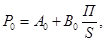
где Р0 - наибольшее удельное сопротивление сжатию болотистого грунта, кгс/см2;
П - периметр штампа, см;
S - площадь штампа, см2; определяется как произведение ширины основания дороги на длину загружения.
Значение Р0 для некоторых видов торфа может быть взято из табл. 26.
Ввиду многократности воздействия нагрузок, неоднородности торфяной залежи, недостаточной изученности удельное допускаемое сопротивление Rg принимается равным Rg = 0,6 Р0.
3. Осадка торфяного основания hN при многократном воздействии нагрузки и Р < P0 (по П.С. Власову) равна
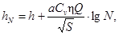
где h - осадка при однократном воздействии нагрузки, определяемая по формуле (по С.С. Корчунову), см;
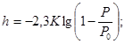
К - коэффициент деформируемости залежи, см;
Р - удельное давление транспортного средства на грунт, кгс/см2;
a - коэффициент уплотнения, см2/кг;
Q - величина нагрузки, кг;
η - динамический коэффициент, равный 1,2;
Сv - коэффициент, зависящий от скорости движения (для некоторых скоростей данные Сv см. в табл. 27).
Таблица 27
|
v, км/ч |
5 - 8 |
10 - 15 |
15 - 20 |
20 - 25 |
25 - 30 |
|
Cv |
1,3 |
1,2 |
1,1 |
1,05 |
1,00 |
4. Осадка основания δ при длительном загружении (по Н.Н. Сидорову) составит:
δ = λmax φ(H) f(P),
где λmax - коэффициент, зависящий от вида торфяной залежи, степени разложения и влажности, изменяющийся в пределах от 0,4 до 0,9. При отсутствии компрессионных испытаний λmax определяют по формулам табл. 28.
Таблица 28
|
Степень разложения, % |
λmax |
|
|
Малоразложившийся |
До 20 |
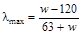 |
|
Среднеразложившийся |
20 - 40 |
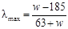 |
|
Сильноразложившийся |
Более 40 |
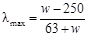 |
где w - весовая влажность торфа в %.
φ(H) - коэффициент, зависящий от мощности торфа (находят по графику рис. 26, где γт - объемная масса, которая изменяется обычно в пределах 0,4 - 0,7 т/м3);
f(P) - коэффициент, зависящий от прилагаемой нагрузки, кгс/cм2 (находят по графику рис. 26, где М - параметр, зависящий от типа болота и принимаемый обычно равным 1,5).
5. Число рядов продольно-поперечного настила основания подбирают в зависимости от максимальной осадки с таким расчетом, чтобы верх основания был в одном уровне с поверхностью болота или выше его при длительном воздействии максимальной нагрузки.
6. При расчете конструкции дороги, предназначенной для обеспечения монтажа и укладки с нее трубопровода, когда происходит внецентренное приложение нагрузки, максимальная величина удельного давления на болотный грунт Pmax от укладочных средств и полная нагрузка Qmax с учетом подъема и опускания труб должна быть увеличена в 1,3 раза.
Рис. 26. Зависимость осадки от мощности торфяной залежи и от прилагаемой нагрузки:
Н - мощность торфяной залежи, м; Р - прилагаемая нагрузка, кгс/см2; gт - объемная масса торфа, г/см3; М - параметр, зависящий от типа болота
7. Пример расчета конструкции временной дороги из лесоматериалов.
Согласна данным изысканий имеем следующую характеристику торфа:
вид - осоково-лесной;
степень разложения - 45 - 50 %;
влажность W = 150 - 520 %.
По табл. 26 определяем коэффициенты А0, В0 и К, которые будут равны:
А0 = 0,18 кгс/см2, В0 = 4,60 кг/см, К = 4,50 см.
Несущая способность торфяной залежи при ширине дороги 6 м будет равна:
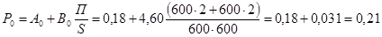
Примечание. Размеры штампа определены из условия применения сборного деревянного покрытия при ширине дороги 6 м и длине загружения 6 м.
Осадка основания под нагрузкой 20 т при стократном загружении будет равна:
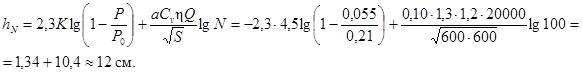
Осадка основания под нагрузкой 20 т при длительном загружении будет равна:
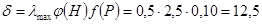
при 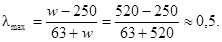
Если эта нагрузка будет приложена внецентренно при монтаже трубопровода с дороги, то осадка увеличится на 30 % и составит h′N = 1,3∙12,0 см ≈ 16 см и d = 1,3∙12,5 ≈ 17 см (h′N - осадка от внецентренно приложенной нагрузки).
Таким образом, чтобы верх основания дорожной одежды был выше уровня поверхности болота, нужно устроить поперечный настил в основании дороги из деревянных брусьев (или бревен) толщиной 20 см или взять бревна меньшего диаметра, например 12 см, и добавить хворостяную выстилку под них толщиной в плотном состоянии не менее 5 см, чтобы толщина основания была больше максимальной расчетной величины осадки δ ≈ 17 см или равна ей.
СПОСОБЫ УСКОРЕННОГО ОПРЕДЕЛЕНИЯ И ОБЕСПЕЧЕНИЯ ПРОХОДИМОСТИ ТРАНСПОРТНЫХ СРЕДСТВ ДЛЯ ВРЕМЕННОГО ПРОЕЗДА ЧЕРЕЗ ЗАБОЛОЧЕННУЮ МЕСТНОСТЬ
Для ускоренной оценки проходимости транспортных средств по заболоченной местности рекомендуется два способа.
1. Определение проходимости транспортных средств путем сравнения величины допускаемого удельного сопротивления болотистого грунта Rg согласно типу болота (см. табл. 24) c максимальной величиной удельного давления на болотистый грунт Р транспортных средств.
При этом удельное давление транспортных средств на грунт Р определяют:
для гусеничных машин - в зависимости от массы и габаритов опорной ходовой части;
для колесных машин - в зависимости от полной нагрузки на колесо.
Считается, что временный проезд транспортных средств возможен, если величина допустимого удельного cопротивления грунта больше величины удельного давления транспортных средств на грунт (Rg > P).
2. Определение проходимости транспортных средств с помощью погружения лома-ударника и гиревого ударника (схемы и порядок производства работ представлены в прил. 4).
Считается, что временный проход автомобилей и гусеничных машин массой до 10 т возможен, если дом-ударник погружается на глубину не более 3 - 5 см.
Возможное ориентировочное количество проходов колесных и гусеничных машин можно определить по количеству ударов гири, обеспечивающих погружение штампа гиревого ударника в грунт согласно табл. 29 и 30.
Указанные выше способы наиболее пригодны при необходимости принятия решения о быстром обеспечении разового пропуска транспортных средств по заболоченной местности.
При необходимости эти два способа могут применяться одновременно.
Таблица 29
|
Ориентировочное количество проходов колесных машин |
||||
|
Грузоподъемность машин, т |
||||
|
3 |
5 |
7 |
10 |
|
|
3 - 5 |
1 - 2 |
0 |
0 |
0 |
|
5 - 10 |
15 - 500 |
10 - 25 |
1 - 5 |
0 |
|
10 - 20 |
100 - 1000 |
50 - 250 |
10 - 50 |
5 - 15 |
Таблица 30
|
Ориентировочное количество проходов гусеничных машин |
|||
|
Масса машины, т |
|||
|
До 20 |
До 40 |
До 60 |
|
|
5 - 10 |
1 |
0 |
0 |
|
10 - 15 |
10 - 15 |
1 - 3 |
1 |
|
15 - 20 |
15 - 18 |
3 - 5 |
1 - 2 |
|
20 - 30 |
20 - 25 |
5 - 10 |
2 - 5 |
Рис. 27. Схема поперечного профиля дорожной конструкции временной дороги с покрытием из песчано-гравийной смеси
3. Если несущая способность болотистых грунтов не обеспечивает проходимости транспортных средств, т.е. не соответствует требованиям пп. 2 и 3 прил. 2, должно приниматься решение о способах повышения несущей способности этих грунтов.
Рис. 28. Простружка (срезка) верхнего слоя слабого грунта на ширину проезжей части
4. Применяют следующие упрощенные способы повышения несущей способности заболоченных грунтов для временного проезда:
отсыпку слоя гравийно-песчаной смеси или местного грунта оптимального состава (рис. 27);
срезку верхнего слоя слабого грунта заболоченной поверхности на болотах небольшой глубины - до 0,4 м, до более плотного грунта или минерального дна (рис. 28);
укладку разреженного или сплошного поперечного настила основания (рис. 29, а, б). Данные и пример подбора конструкции поперечного настила основания представлены в прил. 1 и 2.
5. Для более прочного основания временных вдольтрассовых и подъездных дорог в заболоченной местности могут быть применены типы оснований из лесоматериалов (бревен, брусьев и т.д.), представленные на рис. 6.
Во всех случаях основания дорожной одежды следует выбирать таким образом, чтобы проезжая часть временных дорог в заболоченной местности находилась над поверхностью болота на расстоянии не менее 0,2 м, а в обводненной местности на расстоянии не менее 0,2 м от уровня поверхности воды.
Рис. 29. Разреженный поперечный настил для пропуска гусеничного транспорта:
а - из одиночных бревен; 1 - бревно диаметром 14 - 18 см или фашина диаметром 20 - 30 см; 2 - кол длиной 70 - 80 см, диаметром 6 - 7 см; 3 - торф; б - из пакетов бревен; 1 - штыри диаметром 12 - 14 см, длиной 300 см; 2 - бревно диаметром 14 - 18 см, длиной 500 - 600 мм; 3 - проволока диаметром 5 - 7 мм; А - без закрепления; Б - с закреплением кольями
СХЕМЫ ОБОРУДОВАНИЯ И ПОРЯДОК ПРОИЗВОДСТВА РАБОТ ПО УСКОРЕННОМУ ОПРЕДЕЛЕНИЮ ПРОХОДИМОСТИ ТРАНСПОРТНЫХ СРЕДСТВ ПО БОЛОТНЫМ ГРУНТАМ
1. С помощью погружения в грунт лома-ударника (рис. 30), состоящего из стального лома диаметром 30 мм, массой 8 кг с заостренным нижним концом, и треноги с направляющей втулкой или трубой.
Единичный проход автомобилей и гусеничных машин массой до 10 т возможен при погружении лома-ударника массой 8 кг и диаметром 30 мм с высоты 0,5 м в грунт на глубину 3 - 5 см и менее.
Кроме того, этим способом определяют консистенцию грунта: погружение лома в грунт более 12 см - текучая; погружение лома в грунт более 7 - 8 см - пластичная; погружение лома в грунт более 2 - 4 см - плотная (оптимальная).
2. С помощью гиревого ударника, состоящего из стержня-штампа круглого сечения и гири массой 2,5 кг (рис. 31).
Рис. 30. Лом-ударник с треногой:
1 - стальной лом; 2 - тренога; 3 - направляющая втулка или труба
Для определения возможности проезда по грунтовой дороге или заболоченному участку (болоту) стержень ударника ставят вертикально на поверхность грунта штампом вниз. Затем штамп забивают в грунт ударами гири, свободно падающей с высоты 30 см на нижнюю шайбу. Забивку производят до погружения штампа в грунт до уровня нижней шайбы. Количество ударов гири, необходимое для погружения штампа в грунт, характеризует проходимость грунтовой дороги или заболоченного участка местности.
Ориентировочное количество проходов колесных и гусеничных машин в зависимости от числа ударов гиреударника приведено в табл. 28 и 29.
Рис. 31. Гиревой ударник:
а - для определения проходимости грунтовых дорог; б - для определения проходимости болот; 1 - штамп; 2 - нижняя шайба; 3 - гиря; 4 - стержень; 5 - верхняя шайба; 6 - ручка (размеры даны в мм)
НОРМЫ ЗАТРАТ ТРУДА (чел.-дн.) И ПОТРЕБНОСТИ В МАШИНАХ (маш.-смен) ПРИ УСТРОЙСТВЕ ОДНОПУТНОЙ КОЛЕЙНОЙ ВРЕМЕННОЙ ДОРОГИ С ДЕРЕВЯННЫМ ПОКРЫТИЕМ ИЗ СБОРНО-РАЗБОРНЫХ ЩИТОВ (табл. 31)
Таблица 31
|
Описание рабочих процессов в порядке их технологической последовательности с расчетом объемов работ |
Количество на 1 км |
Производительность в смену |
Потребность |
||
|
маш.-смен |
чел.-дней |
||||
|
1 |
Расчистка просеки от леса и кустарника бензомоторной пилой, га |
2 |
0,8 |
2,4 |
4,8 |
|
2 |
Обрубка сучьев и раскряжевка деревьев диаметром 10 - 16 см для поперечных лежней основания, м3 |
50 |
50 |
1 |
2 |
|
2 |
Устройство хворостяной подушки (выстилки) из кустарника, сучьев и вершин с использованием для уплотнения подушки трелевочного трактора ТДТ-75, м3 |
500 |
150 |
3,3 |
8,3 |
|
2 |
Укладка нижнего ряда поперечных лежней основания из местного леса через 1 м, шт. |
1000 |
100 |
- |
10 |
|
Перевозка круглого леса и шпал на автомашинах ЗИЛ-130 с прицепом на расстояние 3 км для устройства основания, м3 |
204 |
54 |
4 |
4 |
|
|
Погрузка круглого леса и шпал автокраном грузоподъемностью 5 - 10 т, м3 |
204 |
100 |
2 |
3 |
|
|
3 |
Укладка клеточного основания из продольных и поперечных лежней с использованием бензомоторных пил, м3 |
204 |
40 |
5 |
50 |
|
Устройство пазов в шпалах с использованием бензомоторной пилы, шт. |
1148 |
100 |
11,5 |
57,5 |
|
|
Раскладка шпал, шт. |
1148 |
90 |
- |
13 |
|
|
Погрузка щитов на складе автокраном грузоподъемностью 5 - 10 т, м2 |
2000 |
1250 |
2 |
6 |
|
|
Перевозка щитов со склада на расстояние до 30 км автомобилем типа ЗИЛ-131 с прицепом, м2 |
2000 |
84 |
23,1 |
23,1 |
|
|
4 |
Укладка щитов автокраном грузоподъемностью 5 - 10 т, м2 |
2000 |
540 |
3,75 |
18,75 |
|
5 |
Разборка щитов автокраном, м2 |
2000 |
600 |
3,35 |
13,4 |
ТЕХНИКО-ЭКОНОМИЧЕСКИЕ ПОКАЗАТЕЛИ СТРОИТЕЛЬСТВА ВРЕМЕННЫХ КОЛЕЙНЫХ ДОРОГ ИЗ ДЕРЕВЯННЫХ ЩИТОВ НА 1 км (табл. 32)
Таблица 32
|
Затраты на строительство 1 км дорог, по типам оснований (согласно рис. 10) |
||||
|
I |
II |
III |
IV |
|
|
Устройство основания: |
||||
|
маш.-смены |
1,1 |
10,6 |
21,4 |
37,6 |
|
чел.-дни |
1,1 |
26,6 |
63,0 |
110,5 |
|
Укладка-перекладка покрытия с применением автокрана (перевозка на 3 км): |
||||
|
маш.-смены |
15,2 |
15,2 |
15,2 |
15,2 |
|
чел.-дни |
40,5 |
40,5 |
40,5 |
40,5 |
|
Ориентировочная стоимость строительства, руб. |
20500 |
20900 |
21500 |
22400 |
|
Ориентировочная стоимость строительства (руб.) с учетом перекладок покрытия: |
||||
|
2 раза |
10500 |
10900 |
11500 |
12400 |
|
4 раза |
5500 |
5900 |
6500 |
7400 |
|
8 раз |
3000 |
3400 |
4000 |
4900 |
СПИСОК РЕКОМЕНДУЕМЫХ НОРМАТИВНО-ТЕХНИЧЕСКИХ ДОКУМЕНТОВ
СНиП I-I-74. Общие положения. Система нормативных документов, М., Госстройиздат, 1975.
СНиП I-В.8-62. Материалы и изделия из природного камня. М., Госстройиздат, 1962. (Намечен к отмене, шифр нового СНиП II-22).
СНиП I-Д.2-70. Автомобильные дороги. Материалы и изделия. М., Госстройиздат, 1971.
СНиП II-Д.5-72. Автомобильные дороги. Нормы проектирования. М., Госстройиздат, 1373. (Намечен к отмене, шифр нового СНиП II-42.)
СНиП III-43-75. Мосты и трубы. Правила производства и приемки работ. М., Горстройиздат, 1976.
СНиП III-Д.5-73. Автомобильные дороги. Правила производства и приемки работ. Приемка в эксплуатацию. М., Госстройиздат, 1973. (Намечен к отмене, шифр нового СНиП III-40.)
СНиП III-А.11-70. Техника безопасности в строительстве. М., Госстройиздат, 1970. (Намечен к отмене, шифр нового СНиП III-4.)
СНиП III-8-76. Земляные сооружения. Правила производства и приемки работ. М., Госстройиздат, 1977.
СН 449-72. Указания по проектированию земляного полотна железных и автомобильных дорог. М., Госстройиздат, 1973.